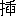

花開時蝶来
蝶来時花開
蝶来時花開
七月廿六日
曇、雨、蒸暑かつた、山口行。
△心臓いよ／＼弱り、酒がます／＼飲める、――飲みたい、まことに困つたことである。
朝、学校の給仕さんがやつてきて、山口へ出張の樹明君からの電話を伝へる、――今日正午、師範学校の正門前で待つてゐる、是非おいでなさい、――そこでさつそく出かける、上郷駅まで歩いて、九時半の汽車で湯田へ。
千人風呂にはいつて髭を剃る、浴後一杯ひつかけることは忘れない、濡れて歩いて山口へ、予定通りに両人会合、二十銭の定食で腹をこしらへて、鈴木さん訪問、いつものやうに御馳走になる、冷し素麺がおいしかつた、それから、街をぶらついてゐると、幸か不幸か、伊東俊さんに邂逅、食堂から食堂へとうろついた、そしてさらに湯田で飲む、私たち二人は西村さんを尋ねあて、湯に入れて貰ひ、ビールを戴いた、むろん短冊や色紙は樹明君に煽動されて書きなぐつた、それからまた、祇園祭の人込を縫ひ歩き、最終のバスで帰庵、満月のうつくしさを賞する余裕もなく、ぐつすりと寝た、よくもあれだけ飲んだり食べたりしたものだ、そして無事におとなしく戻つてきたものだ、そのいづれも感心されてよい！
今日の印象、――今日の感想――
何となく心楽しい日（時々かういふ日がある、日々好日ではあるけれど）。
汽車がバスより高いとは（上郷から湯田まで、汽車賃十三銭、バスは十銭、このバスは安くて心地のよい道である、今日は満員つゞきで、とても乗れない）。
ガソリンカアの快さよ、逢ひにゆくにも飲みにゆくにも！
田舎の娘さんのハイカラぶりはあまりよくありませんね、ゼイタクは一しほみじめですよ。
マダムはシヤン、お嬢さんはスベタ、まことにお気の毒なことですが。
湯田はよいとこ。……
千人風呂五銭の享楽！
檻の猿、それをいつまでも見てゐる人々。
ボロ着て涼しく、安らかで朗らかで。
湯あがりの肌へ雨のかゝるも悪くない。
さみだれて濁り湛へた水（といつても差支あるまい）からぼちやんと跳ねては大鯉のあそび。
梅雨のやうな土用、しかし鰻は、せめて鰌でも食べたいものですね。
糸米の山口が今日は殊によかつた、山口の山はうつくしい、含蓄があつて親しみがある。
鱸のあらひ、鮒のあらひ、鮎の塩焼、いづれも結構だつたが、鮎はとりわけ有難かつた。
人の世に、死のさびしさ、生のなやみはなくなりません。
女よりも男、ビールよりも酒、海よりも山、樹よりも草、そして、――
Ｎ旅館の三助君、とても感じがよかつた、そして二人の仲居さん、あまり感じがよくなかつた。
Ｙ子さんは女性としての媚態を持つてゐない、そこがよいと思つた、彼女自身のためにはよくあるまいけれど。
・道がまつすぐ大きなものをころがしてくる
・よい雨が音たかくふる、これで十分
・かうして暮らして何もかも黴だらけ
・山のみどりを霧がはれたりつつんだり
・うれしい朝の、かぼちやの大きい花かな
赤い花が、墓場だつた
あつい温泉 が湧いてのうせんかつらの花が咲いて
おぢいさんは高声で、ふんどしのあとも
・濡れて歩いてしよんぼり昼顔
・けふは飲めるガソリンカアで行く
むしあつくやつとホームイン（対校試合）
・こんやの最終は満員でバスガールはうたひつつ
・月へうたふバスガールのネクタイの涼しく
・よい雨が音たかくふる、これで十分
・かうして暮らして何もかも黴だらけ
・山のみどりを霧がはれたりつつんだり
・うれしい朝の、かぼちやの大きい花かな
赤い花が、墓場だつた
あつい
おぢいさんは高声で、ふんどしのあとも
・濡れて歩いてしよんぼり昼顔
・けふは飲めるガソリンカアで行く
むしあつくやつとホームイン（対校試合）
・こんやの最終は満員でバスガールはうたひつつ
・月へうたふバスガールのネクタイの涼しく
七月廿七日
晴、土用だからしつかり照つてくれ。
蝉捕の児が三々五々やつてくる、うれしくもあればうるさくもある、私はやつぱり薄つぺらなヱゴイストだ。
午後、樹明来庵、魚と米とを持つて、そして昼寝して晩飯をたべて、おとなしく帰宅。
今日はアルコールなし。
△読書、思索、人間には自得の境地がなければならない、芸術は、殊に俳句はそこから生れる。
管絃祭第一夜、ぽん／＼花火があがる。
哀しい夢だつた。……
・しろいてふてふにいつうまれたかきいろいてふてふ
・蚊帳越しにまともに月が青葉のむかうから
・月の水鶏がせつなく啼いて遠ざかる
郵便やさんがばさりと朝日へ投げだしてくれた
・蚊帳越しにまともに月が青葉のむかうから
・月の水鶏がせつなく啼いて遠ざかる
郵便やさんがばさりと朝日へ投げだしてくれた
七月廿八日
快晴、涼しい快い夏の朝を味ふ。
身辺整理。
桔梗が咲く、さつそく壺にす、その姿、その色、すべてがたまらなくよい、山桔梗はことに。
Ｍ君の友情を味ふうちに、欝屈したふさぎの虫が反逆して、どろ／＼になつてしまつた、そして樹明君の友情をも攪乱してしまつた。……
夕方、さうらうとして帰庵すると、待ちに待つた中原さんが来て待ちくたぶれて帰つたといふ置手紙がある、地団太踏んでも追つつかない、悔と恥と詫とを痛感しながら、そのお土産を戴く、酒、卵、さうめん、バナナ。……
・くらがり風鈴の鳴りしきる
・炎天の鴉の声の濁つてゐる
・月あかり白い薬を飲むほどは
・草ふかくここに住みついて涼しく
・炎天の地しばり草の咲きつづく
・おそい月が出てきりぎりす
・ねむり薬もねさしてはくれない月かげ
・夜蝉よここにもねむれないものがゐる
・炎天の鴉の声の濁つてゐる
・月あかり白い薬を飲むほどは
・草ふかくここに住みついて涼しく
・炎天の地しばり草の咲きつづく
・おそい月が出てきりぎりす
・ねむり薬もねさしてはくれない月かげ
・夜蝉よここにもねむれないものがゐる
七月廿九日
曇、こんな
樹明君から最後通牒みたいな葉書がきた、どうにも仕方がないから放任する。……
七月三十日
晴、昨日から寝つづけてゐる。
夜半、酔樹明君が来て寝る、彼も無言、私も無言、夜が明けると帰つていつた、彼も無言、私も無言、この無言はまことに千万無量のものだつた。
トマトを食べて、すこし心がなごんだ。
こん／＼と睡つた。
節酒するより外に方法なし、とても禁酒なんぞは出来ない。
七月三十一日
我昔所造諸悪業――
皆由無始貪瞋痴――
従身口意之所生――
一切我今皆懺悔――
カルモチンのおかげで、やつとねむつた。皆由無始貪瞋痴――
従身口意之所生――
一切我今皆懺悔――
八月一日
晴、転一歩、歩々新。
前後際断、たゞ即今の当念に生きろ！
身辺整理、整理しても整理しても片付かない。
沈欝たへがたし、自己に籠つて自己を罵る。
暑さきびし、はだかでよこたはる。
死の方へ、――死に面して、――一切我今皆懺悔。
知死期か致死期か。
ちよつと草刈りしてさへ溜息が出る、情ない肉体となつたものではある。
つく／＼ぼうしが山から里へ。
老来ます／＼惑ひ多く、悔いることばつかりなり。
八月二日
朝ぐもり、今日も暑いことだらう。
とう／＼徹夜だつた、あたまは冴えてゐるけれどからだが労れきつてゐる、この情態がつゞけば自滅の外はない。
カルモチンを飲んでも眠れないとはみじめだ、やつぱり。
カルモチンよりアルコール
ちよいと一杯やりましよか
一杯やりたいな、やりたいなだ！ちよいと一杯やりましよか
△或る時は死にたい人生、或る時は死ねない人生。
或る時は仏にちかく、或る時は鬼にひとしい。
自分のうちに動物を見出すことはかなしい。
やつと夜が明けた、朝日がよかつた。
油虫め、食べるものがないから、本をなめマツチをかぢる、そして花までたべる、気の毒と思はないではないけれど、食べ物を与へる気にはなれない、油虫よりも蝿や蚊の方がよい、蛇よりも嫌な油虫だ。
今日も身辺整理、いつ死んでもよい用意をして置かなければならない、遺書も書きかへなければならない。……
・風がすゞしく吹きぬけるので蜂もてふてふも
・死ねる薬をまへにしてつく／＼ぼうし
・草の青さをしみじみ生き伸びてゐる
・住みなれて草だらけ
・のぼる陽をまつ糸瓜の花とわたくしと
・さらりと明けてゐるへちまのはな
・朝月はすずしいいろの桔梗がひらく
炎天のヱンジンのまはるとゞろき
・なんとかかんとか蝿もつれてきて
・こゝろむなしくて糸瓜咲く
炎天、はてもなくさまよふ
・炎天、否定したり肯定したり
・右は海へ左は山へ木槿咲いてゐる
ひとりしんみりとゐてかびだらけ
・なんと朝酒はうまい糸瓜の花
・炎天ぶらりと糸瓜がならんで
・ゆく手とほく雲の峰とほく
・暑さ、この児はとても助かるまい（或る家にて）
・もう秋風のすゝき穂をそろへ
虫なくや投げだした私なれども
・しんみりあほぐ空のゆふ月があつた
・山のしたしさは水音をちこち
雑草ふかく見えかくれゆく馬のたてがみ
・炎天の鴉一羽で啼く
・こゝろあらためてつく／＼ぼうし
・あきないひまなへちまなどぶらさがり（山口にて）
・ふときてあるくふるさとは草の花さかり
・炎天のレールまつすぐに
・炎天のかげはとびかふとんぼ
八月廿七日、故郷の妹の家を訪ねて
・せんだんもこんなにふとつたかげで汗ふく
・腹いつぱい飲んで寝るふるさとの水
・死ねる薬をまへにしてつく／＼ぼうし
・草の青さをしみじみ生き伸びてゐる
・住みなれて草だらけ
・のぼる陽をまつ糸瓜の花とわたくしと
・さらりと明けてゐるへちまのはな
・朝月はすずしいいろの桔梗がひらく
炎天のヱンジンのまはるとゞろき
・なんとかかんとか蝿もつれてきて
・こゝろむなしくて糸瓜咲く
炎天、はてもなくさまよふ
・炎天、否定したり肯定したり
・右は海へ左は山へ木槿咲いてゐる
ひとりしんみりとゐてかびだらけ
・なんと朝酒はうまい糸瓜の花
・炎天ぶらりと糸瓜がならんで
・ゆく手とほく雲の峰とほく
・暑さ、この児はとても助かるまい（或る家にて）
・もう秋風のすゝき穂をそろへ
虫なくや投げだした私なれども
・しんみりあほぐ空のゆふ月があつた
・山のしたしさは水音をちこち
雑草ふかく見えかくれゆく馬のたてがみ
・炎天の鴉一羽で啼く
・こゝろあらためてつく／＼ぼうし
・あきないひまなへちまなどぶらさがり（山口にて）
・ふときてあるくふるさとは草の花さかり
・炎天のレールまつすぐに
・炎天のかげはとびかふとんぼ
八月廿七日、故郷の妹の家を訪ねて
・せんだんもこんなにふとつたかげで汗ふく
・腹いつぱい飲んで寝るふるさとの水
九月六日
曇、雨、晴、――私の心のやうだ。
昨夜も不眠、徹夜乱読するより外なかつた。
○まことに借金はサナダムシの如し。
身辺整理、いつでも死ねるやうに、いつ死んでもよいやうに。――
○なつめは誰にもか
すつかり秋、あまりに早い秋、虫がいそがしく虫のいのちをひろげる。……
酒精中毒の徴候として、爪に筋があらはれた！
長い夜がいよ／＼長い、あゝ。
○無理のない生活、悔のない生活、本然の生活。
・空も秋がきた地しばり草の花も
・つくつくぼうしよ死ぬるばかりの私となつて
・死ねる薬が身ぬちをめぐるつくつくぼうし
・今が最後の、虫の声の遠ざかる
・家があつて墓があつて草が青くて
草の中ゆく私の死のかげ
・つくつくぼうしよ死ぬるばかりの私となつて
・死ねる薬が身ぬちをめぐるつくつくぼうし
・今が最後の、虫の声の遠ざかる
・家があつて墓があつて草が青くて
草の中ゆく私の死のかげ
九月七日
曇つた空から雨が落ちる、まつたく秋だ。
恥知らずの手紙を二つ書く、恥はむしろ洒した方がホントウだらう。
○暗中在明、明中在暗、明暗雙々底。
樹明君を学校に徃訪する、数日ぶりに話した。
四日ぶりに、人間に会うて話し、酒を一杯飲んだのである。
沈黙は私をいら／＼させ、そしてじめ／＼させる。
○不幸な鰐！ 古い文藝春秋で此一文を読んで、たいへん動かされた。
○門外不出、いや不能出。
○とても心臓が悪い、それはむしろ私のよろこびである、私は不健康をよろこぶほど不健康になつてゐるのである、そして私の不健康を救ふものはたゞ不健康そのものである。
○四十にして惑はず、五十にして惑ふ、老来ます／＼惑うて、悩みいよ／＼ふかし。
・誰にあげよう糸瓜の水をとります
改作
・猿と人間と金網と炎天と（湯田）
誰か来さうな糸瓜がぶらりと曇天
・夕焼ふかく何かを待つてゐる
・しぐれて遠くラヂオがうたひだした
改作
・猿と人間と金網と炎天と（湯田）
誰か来さうな糸瓜がぶらりと曇天
・夕焼ふかく何かを待つてゐる
・しぐれて遠くラヂオがうたひだした
九月八日
雨、風、身心沈静。
○コン畜生、オイボレセンチめ、時々あたまをもたげる！
樹明から層雲九月号を借りて来て読む、今月はもう来さうな雑誌が来ない、これもさびしいことの一つだ。
○説いて詠ふのでなくて描いて詠はなければならない。
夜、樹明来、連れ立つて、どしや降りの中を街へ、そしてそれからそれへ飲みあるく、とろ／＼がどろ／＼になつて帰庵、御苦労々々々。
・つゆ草のさけばとて雨ふるふるさとは
・誰もこないでちら／＼するのは萱の穂で
ずんぶりと湯の中の手足いとほしや
・誰もこないでちら／＼するのは萱の穂で
ずんぶりと湯の中の手足いとほしや
九月九日
雨、そして晴、さすがに今日は胃がいたみ頭がおもい。
短冊や半切を書いて書債を果たす。
終日落ちついて読書。
質草一つ出したり入れたりして秋
また質入する時計ちくたく
蝿が打つ手のかげが秋風
また質入する時計ちくたく
蝿が打つ手のかげが秋風
九月十日
晴れたり曇つたり、しかし身心清澄、やつと不眠も去つたやうだ、いはゞ狂風一過の境地、しかしいつまた再来するかも計り難い。
○最後の危機、最後の転換期、五十惑ともいふべきものだらう。
秋の水ひえ／″＼と澄んで湛へてゐる。
○生に即して生を離れる、――こゝだ、こゝだ。
近郊散策、それから戻つて畑仕事。
○耽る溺れる、から、味ふ楽しむ、へ。――
めうがのこそれもふるさとのにほひをさぐる
・おもひでのみち尾花墓場まで
・ポプラに風も秋めいてきた坑木の堆積
・こゝにわたしがつく／＼ぼうしがいちにち
・月のへちまの水がいつぱい
・いつでも死ねる草の枯るゝや
・おもひでのみち尾花墓場まで
・ポプラに風も秋めいてきた坑木の堆積
・こゝにわたしがつく／＼ぼうしがいちにち
・月のへちまの水がいつぱい
・いつでも死ねる草の枯るゝや
九月十一日
晴、安眠熟睡の幸福をめぐまれた。
まことに好季節、百舌鳥が啼く、萩が蕾んだ、曼珠沙華が咲きだした。
九月十二日
Ｋさんから手紙、清丸さんから本、どちらも好意そのものゝやうでうれしかつた。
黙壺来、黙壺君はフアンのフアンだ、酒、牛肉、豆腐、
樹明来、めづらしくまじめで、彼らしくない彼であつた、さびしい彼だつた。
払へるだけ払つて、飲めるだけ飲んだ、とう／＼※［＃「飲のへん＋乍」、139-3］代を交番に行つて借りた、いや保證して貰つた！
・がちやがちやよ鳴きたいだけ鳴け
・お彼岸のお彼岸花をみ仏に
・何だか腹の立つ秋雨のふる
・秋雨の一人で踊る
・雨がふるので柿がおちるので
・お彼岸のお彼岸花をみ仏に
・何だか腹の立つ秋雨のふる
・秋雨の一人で踊る
・雨がふるので柿がおちるので
九月十三日
雨、よく降つた、井戸がいつぱいになつてあふれたほど。
ひとりひっそり、読んだり考へたり、寝たり起きたり。
九月十四日
曇、よいたより、ありがたかつた。
鴉が啼いて私を淋しがらせる、終日読書。
九月十五日
曇、雨、秋祭。
田舎祭の追憶はかなしくもなつかしい。
○酒が飲みたくなくなつた、そして飲まずにはゐられない、地獄である。
今夜も地獄の亡者として、酔うて歩いた、辛うじて戻つて寝た。……
○味ふ酒でなければならないのに酔ひたい酒なのだ、それはまつたく致命的な酒である。
九月十六日
曇、晴れてお祭日和となつた、お宮の
樹明来、行商の話に花が咲いた、それはまことに小つぽけな花だが、私の花でなければならない。
・枯れそめて赤いのは曼珠沙華
庵もすつかり秋のけしきの韮の花
庵もすつかり秋のけしきの韮の花
九月十七日
曇、また雨になつた、身心沈静、あれこれ整理する。
畑仕事、大根と蕪とを播く。
何を食べてもうまかつた私が、何を食べてもうまくない私となつた、横着な私となつたのだ、ニヒリストとなつたのだ。
ちよつとポストまで、ちよつと一杯ひつかけたが苦しかつた、何とニガイアルコールだらう。
・わらやしづくする朝の虫のなく
・しんかんとして熟柿はおちる
・つく／＼ぼうしもをはりの声の雨となり
・夜のふかくこほろぎがたたみのうへに
・灯火一つ虫がとんできては死ぬる
・彼岸花さくふるさとは墓のあるばかり
・しんかんとして熟柿はおちる
・つく／＼ぼうしもをはりの声の雨となり
・夜のふかくこほろぎがたたみのうへに
・灯火一つ虫がとんできては死ぬる
・彼岸花さくふるさとは墓のあるばかり
九月十八日
晴、まつたく秋だ。
久しぶりに入浴、髯など剃つて、ゆつたりした気分で、寝ころんでゐると、夕方、約の如く敬治君来庵、間もなく、樹明君も来庵、お土産の酒と蒲鉾とで一杯ひつかけて街へ。
そして待望の街の灯を観た、やつぱりよかつた、チヤツプリンの本質に触れたやうな思ひがした、日本映画は新派悲劇的で興がなかつた。
おとなしく敬君といつしよに帰庵、今夜もよくはねむれなかつた、一時間ばかりはぐつすりねむつたが。
・あさつゆのしそのはなこぼれては
・藪のなか曼珠沙華のしづか
なんぼでも落ちる柿の木のしづくして
・汲みあげた水の澄む雲かげ
・水は透きとほる秋空
・秋空のどこかそこらで何か鳴く
・おちついて柿もうれてくる
・藪のなか曼珠沙華のしづか
なんぼでも落ちる柿の木のしづくして
・汲みあげた水の澄む雲かげ
・水は透きとほる秋空
・秋空のどこかそこらで何か鳴く
・おちついて柿もうれてくる
九月十九日
曇、五時前に起きて朝飯の支度。
酒があまつてゐたので朝酒、いつものやうにうまくない、呪はれた山頭火！
敬君は下関へ出張、駅まで見送る、戻つてから、預つた愛犬Ｓと遊ぶ。……
ハガキが来たので鯖山の禅昌寺へ、大山君に会ふために。
○犬と遊ぶ、――随筆一篇書けます。
○単調と単純、――それはすなはち、世間生活と私の生活。
ヤキムスビ、――犬に十分与へておいて残飯をそれに。
澄太君からのハガキで、同君が鯖山の禅昌寺に出張してゐて、そしてとても訪ねてくれる余裕がないといふので、こちらから出かけて、逢うてくるつもりで、田舎道を歩きだしたが、いやはや濡れた／＼困つた／＼、『雨はふります、傘はなし』と子供にひやかされたりして、――とうてい、行きおほせないので、湯田の温泉で、冷えたからだをあたゝめてから、また濡れて戻つた、はだしであるいて。
ひそかに心配してゐたＳはおとなしく留守番をしてゐた（最初はやりきれないらしかつたと見えて、座敷の障子をつきやぶつて室内にとびこんだらしい、その障子のやぶれも何となく微笑ましいものだつたが）、彼にも食べさせ、私も食べた。
○何といふおとなしい犬だらう、上品で無口で、人懐かしい、犬小屋は樹明君がいつか持つてきた兎箱、二つに仕切つてあるから一つは寝室で、一つは食堂、そこには碗一個と古筵一枚、――それで万事ＯＫだ！
水音がどこかにある、虫の声が流れるやうだ、溢れてこぼれるやうだ、寝覚はさびしい、しかしわるくない。
○物の音が声に、そして物のかたちがすがたにならなければウソだ、それがホントウの存在の世界だ。
○酔ひたい、うまいものがたべたい、――呪はれてあれ。
水のながるるに葦の花さく
・てふてふとべばそこここ残る花はある
・あひびきは秋暑い街が長く
・あすはおまつりの蓮をほるぬくいくもり
・掃きよせて焚くけむりしづかなるかな
・はれたりふつたりあひたうていそぐ
・まよふたみちで、もう秋季収穫 がはじまつてゐる音
・出来秋ぬれてはたらく
・夜あけの雨が柿をおとして晴れました
・十字街はバスが人間がさん／＼な秋雨
・濡れて越える秋山のうつくしさよ
・ぬれてきてくみあげる水や秋のいろ
はだしであるく花草のもう枯れそめて
・ヱスもひとりで風をみてゐるか
・秋雨の夜がふける犬に話しかける
・てふてふとべばそこここ残る花はある
・あひびきは秋暑い街が長く
・あすはおまつりの蓮をほるぬくいくもり
・掃きよせて焚くけむりしづかなるかな
・はれたりふつたりあひたうていそぐ
・まよふたみちで、もう
・出来秋ぬれてはたらく
・夜あけの雨が柿をおとして晴れました
・十字街はバスが人間がさん／＼な秋雨
・濡れて越える秋山のうつくしさよ
・ぬれてきてくみあげる水や秋のいろ
はだしであるく花草のもう枯れそめて
・ヱスもひとりで風をみてゐるか
・秋雨の夜がふける犬に話しかける
九月二十日
雨、うんざりする雨だ、終日読書。
朝酒があつた、やゝよろしい。
○昨日の出来事が遠い昔の夢のやうな！
街のポストまでちよつと出掛ける、ヱスがついてくる。
降る降る、どしやぶりだ。
いそぎの手紙を四本書いた、行乞から行商へかはるについての問合だ、それを持つてまた郵便局へ、むろんヱスはついてきた、そして途中その姿を見失つてしまつた、仕方がないからそのまゝ戻る、多分ひとりでかへつてくると信じて、――果して彼女は帰つてきた、彼女もうれしがつてゐる、私もうれしかつた。
ヱスはほんたうにおとなしい犬だ。
夕暮から暴風雨となつた、風は何よりも淋しい。
九月廿一日
やうやく風雨がおさまつて晴れてきた。
菜園手入、ホウレン草と新菊とを播きつけた、これで播きたいものだけは播いた、大根、蕪、菜はもう芽生えてゐる、風で倒された蕃椒や茄子をおこしてやる。
嵐の跡、野分の名残も寂しいものである。
街のポストへ、酒屋で一杯ひつかけて、新聞を読んでゐる間に、ついてきたＳが見えなくなつた、生き物は厄介だな、探しても見当らないから戻る、Ｓよ、早く戻つてこい。
大根一本四銭は高いな、田舎味噌百匁八銭。
あれこれ、そそくさして夜が明け日が暮れる。――
昨日もさうだつた、今日もさうだ、明日もさうだらう。……
背広をきて、ステツキをついて、犬をつれて、山頭火も歩いたらどうです！
庵の周囲は曼珠沙華の花ざかり、毒々しい花だけれど、捨てがたい野性味がある、人がかへりみないだけ私は心をひかれる。
うすら寒い、ソデナシをきて頭巾をかぶつて、さて――
だいぶおそくなつてＳが戻つてきた、何だかすまなさうにしよんぼりしてゐる、飯を与へると、いそいで食べて、ぐつたりと寝てしまつた、やれ／＼これで私は安心。
・けさの水音の、ゆふべがおもひだされる雨
・サイレン鳴れば犬がほえる秋雨
嵐のかげのしろ／″＼と韮の花
・日向ごろりとヱスもわたしも秋草に
・あらしのあとの水音が身のまはり
・月へ汲みあげる水のあかるさ
・月のさやけさ酒は身ぬちをめぐる
・月が酒が私ひとりの秋かよ
・サイレン鳴れば犬がほえる秋雨
嵐のかげのしろ／″＼と韮の花
・日向ごろりとヱスもわたしも秋草に
・あらしのあとの水音が身のまはり
・月へ汲みあげる水のあかるさ
・月のさやけさ酒は身ぬちをめぐる
・月が酒が私ひとりの秋かよ
九月廿二日
秋日和、天高く雲遊ぶ、身心不調、沈欝せんすべなし。
Ｓを連れて近郊散歩、彼は私よりもさびしがりやだ、途中でまた行方不明になつてしまつた、何しろ誘惑物が多いから、田舎者の彼はきよろ／＼して、ちつとも落ちついてゐない、……どうしても見つからない、困つたことになつた、……夕方また街へ出かけて探したが駄目だつたので、がつかりして帰庵、……と、彼はけろりとして戻つてきて、がつ／＼飯を食べてゐる。……
ふけるほどよい月になつた、よくねむれた。
・秋風の腹たててゐるかまきりで（再録）
・かまきりよいつ秋のいろがはりした
・糸瓜ゆつたりと朝のしづくしてゐる
・重荷を負うて盲目である
・家いつぱいの朝日がうらの藪までも
・風に眼ざめてよりそふ犬の表情で
・這うてきたのはこうろぎでぢつとしてゐる
・かまきりよいつ秋のいろがはりした
・糸瓜ゆつたりと朝のしづくしてゐる
・重荷を負うて盲目である
・家いつぱいの朝日がうらの藪までも
・風に眼ざめてよりそふ犬の表情で
・這うてきたのはこうろぎでぢつとしてゐる
九月廿三日
朝寒夜寒。
秋空一碧、今夜の月はうつくしからう、結庵三度目の名月、観月句会を催ほすのである。
○酒慾をなくして酒徒のみじめさをなめる！
酒はキレイ、一升借りた、樹明君が豆腐と鶏肉とをどつさり持つてきてくれた。
午後、岔水君と黎々火君とが偶然いつしよになつて来庵、お土産は酒と下物。
四人で飲んだり食べたり、興に乗じて山口へドライヴする、周二君を連れて戻る（君は来庵の用意をしてゐた）、酒と赤貝と菓子とのお土産
さらに飲む、食べる、話す、月が昇る、虫が鳴く、あゝユカイ、ユカイ。
十時の汽車に岔水君を、バスに周二君を見送る。
樹明君はうなつてゐる、黎々火君はねむつてゐる、私はねむれない、後始末をして、残つた酒を飲みほす、これは私の悪癖の一つだが、どうにもならない。
今日の失敗は湯田のＮ女を訪ねたことだつた、誤解される私も悪からうが、誤解する彼等もよくはあるまい。
・月がまろい夜を逢うて別れた
・百舌鳥がてつぺんに落葉しはじめた樹
・秋草ふみつつかりそめの犬とあとさき
・月夜の柿がばたりぽとり（改作）
・木の葉ちるや犬もわたしもおどろきやすく
・サイレン鳴ればさびしい犬なればほえ
・ヱスもわたしもさびしがる月のこうろぎも
・百舌鳥がてつぺんに落葉しはじめた樹
・秋草ふみつつかりそめの犬とあとさき
・月夜の柿がばたりぽとり（改作）
・木の葉ちるや犬もわたしもおどろきやすく
・サイレン鳴ればさびしい犬なればほえ
・ヱスもわたしもさびしがる月のこうろぎも
九月廿四日
秋晴、秋季皇霊祭。
掃く、拭く、障子のやぶれをつくらふ。
黎々火君を未明の汽車に、樹明君は腹工合がいけなくて頭があがらない。
ヱスも私も昨日の御馳走のおあまりを頂戴する。
Ｓはさびしい犬だ、あまりにつつましくおとなしい、何だかあはれつぽい犬ではある。
樹明君やうやく起きて、昼飯をたべて帰つてゆく。
このしづかさは（さびしさではない）どうだ！
今夜もまた眠れないらしい、不眠は何よりも苦しい、不眠がつづくと自殺したくなる。……
・柿の葉や実やおしみなくふる
・みごもつていそがしい虫でまさに秋風
・お彼岸花もをはりのいろのきたない雨
・ヱスもわたしも腹をへらして高い空
△糸瓜（随筆）・みごもつていそがしい虫でまさに秋風
・お彼岸花もをはりのいろのきたない雨
・ヱスもわたしも腹をへらして高い空
△犬と遊ぶ（雑文）
九月廿五日
晴、曇、そして雨、私の気分もそんなだつた。
一昨日の汚れものをやつと片づける、鶏肉の脂肪でズル／＼するので閉口した。
何となくいら／＼する日である、心持が険しくなつて、犬のぢやれつくのも癪にさわる。……
自己省察。
人間の一生、自我の生活。
私はつつましく、きよく、あたゝかく生きてゆく外はない。
身心不調、発熱倦怠。
Ｓの弱虫め、猫にとびつかれて悲鳴をあげた。
Ｓ、お前は我儘だぞ、かしわ汁をかけない飯をたべないとは。
九月廿六日
雨、よくねむれた、暗いうちに起きる。
Ｓの我儘が私の我儘だ、彼の姑息が私の姑息ではないか、もつと強く、もつと愿に、もつと朗かであれ。
うつら／＼として悪夢の連続。
私はよく寝るが――眠るのではないが――Ｓもよく寝る、寝るより外ないからでもあらうが。
五時頃、めづらしくＴ女来庵、待ちあぐんでゐると、樹明君とＩさん来庵、むろん、酒も下物も。
とろ／＼、どろ／＼、そしてぐう／＼！
よく飲んでよく寝た、極楽、地獄、ヨカヨカ。
明けないうちから藁うつくらしの音がはじまつた
・ゆふべはあんまりしづかなたわわな柿
・大風ふいていつた蟻はせつせとはたらく
・お地蔵さまへ生えて鶏頭の咲いてゐる
・秋の日の暮れいそぐ蒲焼のにほひなど
・いつからともなく近眼に老眼が、すゝきとぶ
ま昼虫なくそこへぽとりと柿が
・ゆふべはあんまりしづかなたわわな柿
・大風ふいていつた蟻はせつせとはたらく
・お地蔵さまへ生えて鶏頭の咲いてゐる
・秋の日の暮れいそぐ蒲焼のにほひなど
・いつからともなく近眼に老眼が、すゝきとぶ
ま昼虫なくそこへぽとりと柿が
九月廿七日
晴、ゆうぜんとして、或はぼうぜんとして。
Ｓが卑怯な我儘な振舞をするので、腹が立つて打つた、あゝ何故にＳを打つたのだ、私自身を打つべきではないか、敬君よ、早くＳを連れていつてくれたまへ、彼は私をして私自身をあまりにまざ／＼と見せつける！
近郊散歩、Ｓを連れて。
昨夜の山頭火狂乱の跡を観て歩く、誰も知らない、知つてゐるのは山頭火自身だけだ！
・むすめの竿がやつと熟柿へとどいて青空
・住む人はない秋ふかい花をもらふ
・さうぼうとして街が灯れば木の葉ちる
足音ちかづくよな、柿の葉おちるわおちるわ
・をとことをんなと月が冴えすぎる空
・住む人はない秋ふかい花をもらふ
・さうぼうとして街が灯れば木の葉ちる
足音ちかづくよな、柿の葉おちるわおちるわ
・をとことをんなと月が冴えすぎる空
九月廿八日
晴、当面の仕事は何か、――まづ書債を果たす、これだけでもサツパリした。
午前樹明徃訪、午後は樹明来訪、ちりで一杯やる、松茸は初物なり、そしていつ食べてもうまい。
高木断食寮の研究生、中村幸治さんといふ青年来庵、長期断食をしたいが泊めてくれぬかとの事、私はＳがゐてさへ神経にさはる位だからと断る。
彼は断食、私は絶食！
樹明君は風邪気味で夕方まで寝た、そしておとなしく帰宅、私はねむれないのでおそくまで漫読。
樹明君についていつたＳがいつまでも戻つてこない、それがまた私の気分をみだす。……
追加一句 津島にて
・おわかれの、水鳥がういたりしづんだり
改作二句
・つく／＼ぼうしあまりにちかくつく／＼ぼうし
・月へゆれつつバスガールのうたひつつ
・おわかれの、水鳥がういたりしづんだり
改作二句
・つく／＼ぼうしあまりにちかくつく／＼ぼうし
・月へゆれつつバスガールのうたひつつ
九月廿九日
曇、晴れて秋空のよろしさ。
過去一切を清算して、新一歩を踏み出さなければならない、私はもう行乞する意力も体力もなくしてしまつたから、行乞を行商にふりかへて、改めて歩くより外ない。
Ｓは昨夜はとう／＼戻つて来なかつた、多分、樹明君に踉いて行つたのだらうとは思ふけれど気にかゝる、午後になつたら、学校へ出かけようと心配してゐるところへ、給仕さんが、樹明君からの手紙を持つて、Ｓを連れて来てくれた、よかつた／＼。
大田へ来てくれといふ電話ださうなが、行きたいけれど、いつもの金缺で行けさうもない、残念々々。
近在散歩、お伴はＳ、秋の雑草を貰つて帰る、苅萱、コスモス、河原蓼、等々、やつぱり苅萱がいちばん好きだ。
今夜はまた不眠で困つた、夜が長かつた。
油虫ものろ／＼となつた、それを打ち殺す残忍さ。
・昼も虫なく咲きこぼれたる萩なれば
・風がふく障子をしめて犬とふたり
・ここへも恋猫のきてさわぐか闇夜
・ゆれては萩の、ふしては萩のこぼるゝ花
・みごもつてこほろぎはよろめく
・どうでもかうでも旅へ出る茶の花の咲く
・朝は早い糸瓜のしづくするなどは
・風がふく障子をしめて犬とふたり
・ここへも恋猫のきてさわぐか闇夜
・ゆれては萩の、ふしては萩のこぼるゝ花
・みごもつてこほろぎはよろめく
・どうでもかうでも旅へ出る茶の花の咲く
・朝は早い糸瓜のしづくするなどは
九月三十日
霧雨、午後は晴。
武二君から返信、さらに返信を書く――
……失礼ながら打明けていへば、私は過去及現在の生活が続くならば、続けなければならないやうならば、私は自殺でもする外ないのです。
……行商は労働です、お言葉の通りです、そして行乞も労働です、もつと労働です、ただ筋肉労働として行乞しなければ現代の情勢では食つてゆけないのです。
すべてが生存――生活とはいへませんね――のあえぎです、私が行乞を行商にふりかへようとするのも、封建的遺習乃至資本主義社会の崩壊過程を暗示してゐますね。……
Ｓも自分を持てあまして、あちらへごろり、こちらへごろりしてゐる、私は自分をもＳをも持てあましてゐる。……行商は労働です、お言葉の通りです、そして行乞も労働です、もつと労働です、ただ筋肉労働として行乞しなければ現代の情勢では食つてゆけないのです。
すべてが生存――生活とはいへませんね――のあえぎです、私が行乞を行商にふりかへようとするのも、封建的遺習乃至資本主義社会の崩壊過程を暗示してゐますね。……
今日から麦飯、それは経済的でなくて保健的意義からである、食べすぎる、うまいものを食べたがる、――それがいけない、弊□は不足から来ないで十分以上から来る。
どうしても眠れない、頭脳が痛む、ああ。
十月一日
曇、晴れて秋、そして秋風秋雨。
柿買爺さんがやつてきていろ／＼話す。
○「質よりも量」から「量よりも質」へ転向しつつある私、それは自然であり真実だ。
『私はうたふ』
十月二日
肌寒くなつた、昨夜はよく眠れた、有難かつた。
今朝もＳの卑怯な態度に腹が立つた、そしてすぐまた、あはれみいたはるのだつた。
方々から色々のたより、しみ／″＼ありがたいと思ふ、とりわけてＫのはかなしくもうれしい手紙だつた！
断ちがたい執着、捨てきれない煩悩、愛憎好悪のいづれもの人生の姿であり人間の力ではないか。
払ふ、払へるだけ、そして買ふ、買へるだけ。
Ｓはぢやれる、私はふさぐ、犬と人とは。――
私の好きな、そして其中庵にふさわしい茶の花がもう咲きだしました、私は旅のおもひでにふけります、そして旅へ出たい、出なければならないと思ひます。
さびしさうな、かなしさうでもあるＳを見よ、やりきれないではないか！
・おもてもうらもやたらに糸瓜がむだばなつけて
・なつめはみんなうれておちて秋空
・つるべしたたるぽつちり咲いてゐるげんのしようこ
・秋の雨ふるサイレンのリズム
・藪風、逢ひたうてならない
・別れて遠い顔がほろ／＼落葉して
・質のいれかへも秋ふかうなつた
・柿の木のむかうから月が柿の木のうへ
・なつめはみんなうれておちて秋空
・つるべしたたるぽつちり咲いてゐるげんのしようこ
・秋の雨ふるサイレンのリズム
・藪風、逢ひたうてならない
・別れて遠い顔がほろ／＼落葉して
・質のいれかへも秋ふかうなつた
・柿の木のむかうから月が柿の木のうへ
十月三日
三時に眼が覚めて四時に起きる、おさんはつらいね！
今日も秋雨、わるくないけれど、すこしくどいね。
○麦飯のききめ、驚くべきものがある。
○尊ぶと惜しむとは違ふ、もつたいないもいやしいから、と
○コクとアク、この差違も考へなければならない、コクは物そのものの味はひであるが、アクは残滓的遺物だ。
不眠と不昧と、そして転向。
○茶の花が咲きだした、茶の木に茶の花。○音と声、陰影――濃淡、明暗、強弱。
○酔ひたい酒は呪ふべし、味ふ酒は讃ふべし。
秋がふかうなる――ソデナシを着てゐてもうそ寒い――雨が落葉をたゝいて虫がないてゐる。――
ヒマはありすぎるほどあるのに余裕がないとは！
酔つぱらつてどろ／＼、樹明君も酔つぱらつてどろ／＼になつてきた。……
・死にたい草の枯れようとして
・秋蝿、それを打ち殺すのか
・御飯のしろさぬくさが手から手へ
・めい／＼のこと考へてゐる灰皿をまんなかに
・ゆふべいろづいた柿がおちさうな
・なんとなくなつかしいもののかげが月あかり
・さみしさのやりどころない柿の落ちる
・郵便やさんたより持つてきて熟柿たべてゆく
・秋蝿、それを打ち殺すのか
・御飯のしろさぬくさが手から手へ
・めい／＼のこと考へてゐる灰皿をまんなかに
・ゆふべいろづいた柿がおちさうな
・なんとなくなつかしいもののかげが月あかり
・さみしさのやりどころない柿の落ちる
・郵便やさんたより持つてきて熟柿たべてゆく
十月四日
晴、泥を洗ふ、曇、洗つても落ちない泥だ。
街へ出ていつたＳがよろ／＼とかへつてきた、うたれたのか、悪いものでも食べたのか、――それは私自身の姿でもあつた、みじめでやりきれない。
敬君来庵、Ｓを連れていつてくれた。
アルコールはありがたいかな、ぐつすりねむれた。
十月五日
機縁が熟した、ぐうたらな、でたらめな生活よ、さようならだ、昨日と今日との間には截然として一線が劃された、私の心境はおのづからとけて、すなほにあふれて、あたゝかく澄んでゐる。……
○しづかなよろこび、それはいづみあふれる水のやうな、奇蹟的に、昨日までの不平、焦燥も未練も憂欝も解消してしまつた、明るく澄んで、温かく冴えた境地へ到達してゐる。
日暮に樹明来庵、酒と下物とを持つて。
何とおちついた酒と会談だつたらう。
そしてまた何とよいねむりだつたらう。
夜ふけてＳがひよろりとやつて来た、食べものをあるだけ与へると、ぺろりと食べて、そこらへごろりと寝てしまつた、彼はいぢらしい犬だ、どうも不幸な犬らしい。
・けさから旅の草鞋はく蕎麦の花が白く
・夜あけ米とぐみぞそばのさいてゐるところ
・秋雨の汽車のけむりがしいろいひゞき
・てふてふひらりと萩をくぐつて青空へ
・うらからきてくれて草の実だらけ（樹明に）
・たまたま人がくると熟柿をもぐと
・風の日を犬とゐて犬の表情
・夜あけ米とぐみぞそばのさいてゐるところ
・秋雨の汽車のけむりがしいろいひゞき
・てふてふひらりと萩をくぐつて青空へ
・うらからきてくれて草の実だらけ（樹明に）
・たまたま人がくると熟柿をもぐと
・風の日を犬とゐて犬の表情
十月六日
曇、ぢつと落ちついてゐて、さて、さびしくないことはないが。
肌寒い、蕎麦の花が白い。
身辺整理、むしろ身心整理。
夜、樹明来庵、泥酔してゐる、蒲団を敷いて寝かせる、かうまで酔はなければな
十月七日
晴、百舌鳥の鳴声が鋭い、秋風らしく吹く。
豊饒の秋！ 山には山の幸、野には野の幸、庵には庵の幸がある。
すすき尾花がうつくしい。
午後、樹明君がまたやつてきて、飯をたべて、ぐう／＼と寝て、さびしさうに帰つていつた。
文字通りに、三日間の門外不出だ、ちよつとポストまで出かけたいのだが、風がふくのでやめる。
寝たり起きたり、読んだり考へたり。――
・生きものみんな日向へ出てゐて秋風
・寝床へ日がさす柿の葉や萱の穂や
・何か足らないものがある落葉する
・やつと郵便がきてそれから熟柿がおちるだけ
・寝床へ日がさす柿の葉や萱の穂や
・何か足らないものがある落葉する
・やつと郵便がきてそれから熟柿がおちるだけ
十月八日
晴、風。
朝、Ｏさんから採つたばかりの松茸を貰ふ。
四日ぶりに街のポストへ、そして三日ぶりにコツプ酒一杯、そして心臓がいかに弱くなつてゐるかが解る。
石蕗がもう咲いてゐたので床の壺に活ける。
○雑草はみなよろしい、好きである。
凡山凡水、凡人凡境、それでけつかうです。
松茸一本焼いて麦飯三杯、おいしい昼餉だつた。
例の洋服を質入して、マイナスを払ひ、酒を借る。
入浴、何日ぶりか忘れたほど久しぶりだつた。
樹明君を招待する、いそがしい会合だつたが愉快だつた。
よいさけ、よいちり、よいよいよいとなあ。
それから、泥、泥、泥だつた、泥のやうに酔うて泥の中を這ひまはつた。
・百舌鳥のするどくその葉のちるや
老祖母追憶
・熟柿のあまさもおばあさんのおもかげ
南天の実のいろづくもうそさむい朝
・空はゆたかな柿のうれたる風のいろ
老祖母追憶
・熟柿のあまさもおばあさんのおもかげ
南天の実のいろづくもうそさむい朝
・空はゆたかな柿のうれたる風のいろ
十月九日
酒、酒、そして酒だ。
面白くないから飲む、飲めばきつと飲みすぎる、いよいよ面白くないから、ますます飲む、――これを循環的に繰り返して転々するから、末は自殺しかない（その自殺はほがらかな自殺であらうが）。
現在の私に望ましいものがあるとするならば、それはころり徃生だ。
十月十日
終日一人楽清閑。
禅海君が一年ぶりに来庵したけれど、彼に好意を持たない私は好意の示しようがない、彼も私の心持を察して、四国へ渡るといつて、別れていつた。
自然［＃「自」と「然」の間に白三角傍点］はう［＃「は」と「う」の間に白三角傍点］たふ［＃「た」と「ふ」の間に白三角傍点］
自然のリズム。
自然の相 。
人生の真実。
現実のうごき。
自然のリズム。
自然の
人生の真実。
現実のうごき。
十月十一日
晴、何が何やら解らないけれど面白い、同時に面白くない、やつぱり何が何やら解らないのだ。
公益質屋へ行つて利子だけ払ふ、今日此頃の質屋風景は秋らしい。
十月十二日
秋晴、風がふいては雨。
○あかるいさみしさだ、すなほな死であれ。
樹明君が
○熟柿――木の実のあまさは自然のあまさだ。
○熟柿と日本の老人（老祖母追憶）
○みぞそばがうつくしい花を咲かせはじめた。
○四十惑うて五十更に惑ふ、六十尚ほ惑ふだらう。
十月十三日
まことに秋晴、散歩日和、運動会日和だ。
朝は水の冷たさを感じる。
○存在の世界、在るところのもの。
アキラメでない、サトリでない、マコトである。
┌──────────────────────┐
│近在散歩、 │
│ どこへゆくか、いつもどるか、わかりません│
└──────────────────────┘
かう書き残して置いて歩く、時計をまげて一杯やる、そして自動車に乗り込んでしまつた。│近在散歩、 │
│ どこへゆくか、いつもどるか、わかりません│
└──────────────────────┘
大田の町へ運ばれた、そして伊東君のお客となつた、酔ふた、眠つた。
十月十四日
曇、大田の伊東君の家庭の中にゐた。
身心がすぐれないので、早々帰庵。
衰へたるかな、山頭火！
米がない、銭もない、麦はある、それを炊いて食べる、これがホントウの麦飯だ、あまりうまくはないな。
枯草あたたかう犬は戻つてきてゐる（Ｓよ）
こころむなしく日向をあるく
・もいではすする熟柿のぬくとさは
・空のふかさへ変電所の直角形（改作）
・あかるくするどく百舌鳥はてつぺんに
こころむなしく日向をあるく
・もいではすする熟柿のぬくとさは
・空のふかさへ変電所の直角形（改作）
・あかるくするどく百舌鳥はてつぺんに
十月十五日
曇、時々雨となる。
○明るい空しさ――これが今日此頃の私の気分。
○貧閑――まことにしづかで、ほんたうにさみしい。
Ｓがまたやつてきてゐるけれど、与へる物がない。
十月十六日
曇、そして雨、百舌鳥がやたらに啼く。
うれしい手紙、それは未見の新らしい友から。
やうやくにして酒と飯とにありついた。
樹明君からも白米のお布施。
夕方、君はさらに酒と魚とを持つて来庵、それから、私はまた恥づかしい私となつた。
十月十七日
雨、やがて晴、ほがらかな憂欝とでもいはうか。
樹明君やつてきたがすぐかへる。
・みごもつてよろめいてこほろぎのいのち
・日向ぼつこはなごやかな木の葉ちつてくる
・ゆふかぜのお地蔵さまのおててに木の実
・日かげいつか月かげとなり木かげ
空が風が秋ふかうなる変電所の直角形（改作）
・日向ぼつこはなごやかな木の葉ちつてくる
・ゆふかぜのお地蔵さまのおててに木の実
・日かげいつか月かげとなり木かげ
空が風が秋ふかうなる変電所の直角形（改作）
十月十八日
晴、自省あるのみである、苦しめるだけ苦しめ。
十月十九日
晴、徹夜展転反側。――
三日間まつたく門外不出。
純真に生きる、これが私の一切でなければならない。
従容として、私は生きよう、そして死なう。
流れるままに流れよう、あせらずに、いつはらずに。
十月二十日
快晴、身心安静。
私の境地は悠々自適でなければならない、私の行動は逍遙遊でなければならない。
酒が飲みたくなつた、煙草も吸ひたくなつた、御馳走が食べたくなつた。……
・柿落葉そのままそれでよい日向
・米をとぐ手のひえ／″＼と秋
・熟柿もぐとて空のふかさよ
・病めるからだをよこたへて風を聴くなり
・秋もをはりの日だまりのてふてふとわたくし
・米をとぐ手のひえ／″＼と秋
・熟柿もぐとて空のふかさよ
・病めるからだをよこたへて風を聴くなり
・秋もをはりの日だまりのてふてふとわたくし
十月廿一日
晴れて明るく、むなしくはてなく、澄みてかぎりなし。……
十月廿二日
晴、門外不出六日間、自分を見詰めつゞけてゐる。
夕、樹明来庵、酒と煙草とありがたし、そして玉ころがしとはおもしろし。
十月廿三日
曇、樹明徃訪。
やつと工面して、冬物を質受して、妹を訪ねる、子の結婚について相談するために！
肉縁はたちがたくしてなつかしい。
十月廿四日
曇、帰庵休養、身心の衰弱いかんともしがたし、昨日の茸狩がこたえたのであらう。
・茂るまゝにして枯れるまゝにして雑草
みんないつしよに茸狩すると妹の白髪（妹の家にて）
落葉ふか／″＼と茸はしめやかにある
・秋風のふく壁土のおちること
みんないつしよに茸狩すると妹の白髪（妹の家にて）
落葉ふか／″＼と茸はしめやかにある
・秋風のふく壁土のおちること
十月廿五日
故郷宮市は花御子祭にて賑ふならん。
昨日貰つてきた黒茸を焼いて麦飯を腹いつぱい。
熊本へ行かなければならない、彼女と談合しなければならない、行きたくもあり行きたくもなし、逢ひたくもあり、逢ひたくもなし、――といふ気持。
あれこれとおくれて、四時の汽車で出発。
複雑な微妙な心理状態だつた。
十
十一月廿七日
十一月廿八日
『旅日記』
十一月廿九日
十一月卅日
十一月卅一日
十一月一日
午後五時帰庵、やれ／＼と思つた、そしてすぐ寝た。
九州行そのものは悪くなかつたけれど、熊本はやつぱり鬼門だつた。
○出かけて、帰つてきて、庵のよさ、自分のよわさがよく解る、山頭火には其中庵の外におちつくところなし。
柿の落葉、茶の花、みんなよろしい。
がつかりして、ぐつすり寝た。
つかれてかへつてきて茶の花
・伸き のびてゐて唐辛赤うなる
・すすきをばなもうららかにちるや
・まいてまびいてつけてきざんでかみしめてゐる
水前寺にて
・水は秋のいろふかく魚はういてあたまをそろへ
・柿が赤くて住めば住まれる家の木として
・
・すすきをばなもうららかにちるや
・まいてまびいてつけてきざんでかみしめてゐる
水前寺にて
・水は秋のいろふかく魚はういてあたまをそろへ
・柿が赤くて住めば住まれる家の木として
十一月二日
晴、風。――
さびしけれどもしづかなり
まづしけれどもやすらかなり
すなほに、すなほに、そしてすなほに。まづしけれどもやすらかなり
夜、樹明来、しんみりと話す。
十一月三日
しぐれ、明治節、農学校運動会の騷音。
東京の井師五十歳祝賀句会へ打電――
アキゾラハルカニウレシガルサントウカ
野菊、りんだう、石蕗、みぞそばの花、とり／″＼に好きだ。
・みんな働らく刈田ひろ／″＼として
・あぜ豆もそばもめつきり大根ふとつた
・たつた一つの、もぎのこされた熟柿をもがう
・垣も茶の木で咲いてゐますね
・秋もをはりの夜風の虫はとほくちかく
・あぜ豆もそばもめつきり大根ふとつた
・たつた一つの、もぎのこされた熟柿をもがう
・垣も茶の木で咲いてゐますね
・秋もをはりの夜風の虫はとほくちかく
十一月四日
終日読書。
私は熊本行を契機として転向、といふよりも復帰することが出来た。……
○……持つべきものは子なりけり、私は私を祝福しなければなるまい。
方々へたよりを書く。
十一月五日
晴、何とうらゝかな、曇、何としづかな。
洗濯、施肥、そして入浴、一杯ひつかけました。
櫨がもう紅葉してゐる、雑木紅葉がだん／＼うつくしくなる、雑草は日にまし枯れてゆく。
○濁酒から泥水へ――私の一生はかうした経路をたどりつゝありはしなかつたか！
うれしい事は、アルコール渇望が薄らぎつゝあることである、酒に対する執着さへなくなれば、私は私の欣求する生活に入ることができる。
○動かうにも動けない、しばらくぢつとして、身を養ふ、いや心を養ふのだ、私の身心は荒んでゐる。
○病痾は、私にとつては一つの天恵だ、これは悲しい事実であるが、合掌して味到さるべきものだ。
○本然の自己に帰つて落ちついた安らかさ。
・草も木もうち捨ててあるところ茶の花
・雨ふる落葉おちつく
・雑草、どこからともなくレコードうた
・茶の花さいてここにも人が住んでゐる
病中
・寝てゐるほかない茶の花のいつまでも咲いて
・百舌鳥のするどくぬける歯はぬけてしまふ
旅
・みちはすすきへ、すすきをくぐれば水
・雨ふる落葉おちつく
・雑草、どこからともなくレコードうた
・茶の花さいてここにも人が住んでゐる
病中
・寝てゐるほかない茶の花のいつまでも咲いて
・百舌鳥のするどくぬける歯はぬけてしまふ
旅
・みちはすすきへ、すすきをくぐれば水
十一月六日
秋時雨、雨の音と百舌鳥の声と柿落葉と。
Ｍ君からの返信はありがたかつた、ほんたうにありがたかつた。
あまり沈欝になるので、キレイ一升借りて、イワシ十銭ほど買うてきて、チビ／＼飲みはじめたが、そして待つともなく樹明君を待つてゐたがやつてこないので、学校まで出かけて訳を話したが、とても忙しくて行けないといふ、そこで私自身を持てあまして街へ出てみたけれど面白くないので、鮨を食べて戻つて、すぐ寝た。……
酒飲みが酒が飲めなくなつては、――あれほど好きだつた酒があまり欲しくなくなつては、――それが今日の私だつた、明日の私であるかも知れない。
身心不調、胸苦しくて困つた、心臓がいけなくなつたのであらう、もう罰があたつてもよい頃ですね！
○持つて生れて来たものを出したい、その人のみが持つもの、その人でなければ出せないもの、それを出しきるのが人生だ、私は私を全的に純真に俳句しなければならない、それを果さなければ死んでも死ねないのだ。
○食慾がなくなるのがさみしい、私の大きい胃袋は萎縮しつつあるのか、ルンペンの精力がなくなりだしたのか。
病中
・ともかくも生かされてはゐる雑草の中
・をんな気取つてゆく野分ふく
・蛇がひなたに、もう穴へはいれ
・ともかくも生かされてはゐる雑草の中
・をんな気取つてゆく野分ふく
・蛇がひなたに、もう穴へはいれ
十一月七日
うそ寒い風がふいて晴れてくる、蒲団を干す、と、またしぐれてくる、柿の葉が生もののやうに舞ひ散る。……
やがて日本晴だ、一天雲なし、ありがたいな。
なまけてたまつた返事を書く、緑平老へは殊に長い手紙を書いた、私の愚痴を本当に聞いてくれる友の一人として、私は君を信頼してゐる。
○明日の句はもう私には作れないけれど、私にも今日の句はまだ作れる自信がある（芭蕉や蕪村や一茶の作はすでに昨日の句であることに間違はない）、よし、私はほんたうの私の句を作らう、作らなければならない、それが私のほんたうの人生だから。
米買ひに行つて、そこの主人に話しかけられた、宗教についてしばらく話した、彼もまた悩める一人だつた。
寒い、寒い、冬ごもりの用意は出来ますか。
○雑草の声を聴く、雑草的存在、雑草的生活。
○酔ひたい酒から味ふ酒へ。
○播かないで刈る、――私の生活はさうでないといひきれるか。
夕方から山口へ行く、三八九を復活続刊する外なくなつたから鉄筆を買ふために、――そして鈴木さんを訪ねる、おいしい御酒と御飯とをいたゞいてたのしく話す（私の現実に触れすぎたが）、九時の汽車で戻つておとなしく寝た。
平和なる家庭なるかな、私は家庭人ではないけれど、家庭のあたたかいアトモスフイアは好きである。
柿もたわわに村一番の物持の屋敷で
・灯影が水に、落葉する樹もありて
・バスト 汽車と寒い灯が灯が走りくる
・ふけて戻ればたどんがひそかに燃えてゐた
湯田一句追加
・山山もみづりそのなかよい湯のわくところ
・しぐれてはそこらで山羊のなく変電所
・灯影が水に、落葉する樹もありて
・バス
・ふけて戻ればたどんがひそかに燃えてゐた
湯田一句追加
・山山もみづりそのなかよい湯のわくところ
・しぐれてはそこらで山羊のなく変電所
十一月八日
晴曇さだめなくしぐれる、いはゆる秋の空だ。
寒い、冷たい、もう冬だ、火燵が欲しい。
何も食べたくないから、トンビを着て豆腐買ひに、――一丁三銭に値上げしてゐた（前は二銭五厘）。
寝てゐると、めづらしや女客、彼女は掛取だつた！
○現実とは何か、生活とは何か、自然とは何か、主観とは何か。
青白い生活、青白い句を揚棄せよ。
さらに光を力を――と私はさらに主張したい。
・豆腐さげてしぐれて濡れてもどる
自戒
・今日から禁酒のしぐれては晴れる空
・菜葉しぐれてきたこやしをやらう
・熟柿日和で山の鴉が出てきてさわぐ
あつ子嬢新婚
ほんに晴れわたり木の葉のとぶことも
改作
・ここを死に場所とし草はしげるままに
自戒
・今日から禁酒のしぐれては晴れる空
・菜葉しぐれてきたこやしをやらう
・熟柿日和で山の鴉が出てきてさわぐ
あつ子嬢新婚
ほんに晴れわたり木の葉のとぶことも
改作
・ここを死に場所とし草はしげるままに
十一月八日［＃「十一月八日」はママ］
日本晴、それから――万事如件。
○光の句、力の句。
現実を直視せよ、生活を強化せよ。
各人各人からのたより、それ／″＼にうれし、緑平老のそれはことにうれしかつた。
今日はトンビを着て油買ひに。
紙の中に油虫の巣窟を偶然見つけた、幼虫数百、すぐ掃き捨てたが、ぞつとした。
過去を忘れよ、過去の残影を捨てよ。
私も苦労性だわい、私が帰庵の手紙をだしたのに健からは何ともいつてこないので何となく気にかかる、これも親心のあらはれか、ああ。
○理窟と作家、緑平の一面。
理窟を持たない人は尊い。
鍋が一つ、それでも事足りる。
抜ける歯は抜けるまゝにしておく。
かきをきを書きかへておかう。
日暮に樹明来庵、久しぶりな会飲だつた、酒はキレイ、肴はハム、客は樹明、だから酔うてぶらつくこと例の如し。
やつと帰庵、彼氏も泊る、とんだ宿直なり。
○酔うていよ／＼老衰を感ず。
・雑草も声ありてしぐれ
・病めば梅干のあかさ
・誰にもあはないとうがらし赤うなる
・かうまでからだがおとろへた草のたけ
・すつかり葉をおとしてしまつた柿の木へ旅から戻つた
・ほつと入日のさすところ草の実
・やうやくおちつけて茶の花や
・病めば梅干のあかさ
・誰にもあはないとうがらし赤うなる
・かうまでからだがおとろへた草のたけ
・すつかり葉をおとしてしまつた柿の木へ旅から戻つた
・ほつと入日のさすところ草の実
・やうやくおちつけて茶の花や
十一月十日
晴、二日酔の気味、恥づべし。
小鳥の来ては啼く日なり。
○余生を楽しむ――私の場合では私に徹することだ。
○与へる何物も持たない私はせめて何物をも奪はない生活を持しなければならない、他を妨げ物を害する行動を捨てなければならない。
昨日の酔中散歩は醜くかつたが、いや悪かつたが、それによつて積日の沈欝が払ひ除かれたのはよかつた。
「雑草」所載の「正信偈一巻」を読んで白船老におそひかゝつた不幸を悲しむ、希くはこの不幸が最初の、そして最後のものであれ。
勉強、勉強、勉強しよう、私はあんまりなまけてゐた。
ヱキのポストまで、――やつと行つてきた。
○ありのままに一切を観る。
○与へられるものを与へられるままに受入
○いつもそく／＼として身にせまるもの、それは流転のすがただ。
○自己省察がアヤフヤだ、だから現実把握もアヤフヤだ。
あまりにしづかな、しづかすぎてやりきれないほどのゆふべだつた。
終日終夜読書。
・こゝに枯れたるこの木の冬となる（庵の枇杷樹）
・大根漬けてから長い手紙を書く
・ひなたはあたゝかくやがて死ぬる虫
いつとなく草枯れて家が建ち子が泣いてゐる
お寺の鐘が鳴りだしました蔦紅葉
病めるからだをあるかせてゐるよ草の実よ
虫なくや咳がやまない
なんだか人なつかしい草はみのつてゐるみち
あまりひつそりして死相など考へては
・大根漬けてから長い手紙を書く
・ひなたはあたゝかくやがて死ぬる虫
いつとなく草枯れて家が建ち子が泣いてゐる
お寺の鐘が鳴りだしました蔦紅葉
病めるからだをあるかせてゐるよ草の実よ
虫なくや咳がやまない
なんだか人なつかしい草はみのつてゐるみち
あまりひつそりして死相など考へては
十一月十一日
のどかな晴れ、小鳥が山から出て遊ぶ。
朝、樹明来庵、昨夜の残りの酒を飲む。
お茶漬さら／＼、樹明おくるところの辛子漬で。
ぬけさうでぬけなかつた歯がぬけた、ほつとしたさびしさを味ふ、もう堅いものは食べられない、食べものの味がなくなつた、噛まなければ、噛みしめなければ物の味は出てこない、幸にして酒は液体、そして別物だ、流動のなかに酒のうまさはある。……
午後散歩、折から女学校の運動会、ちよつと見物、ぶら／＼帰つてくると、女客が二人、縁に腰かけて待つてゐられた、ＴさんＳさんといふ、何も話すことはないので、私の心境について話した。
・山のぬくさはりんだうひらく
酒を買ふとて踏んでゆく落葉鳴ります
・藪のむかうまで夕日のつばふ き
・なんぼう考へてもおんなじことの落葉をあるく
・そこに夕月をおき枇杷は花もつ（雑）
・冬夜むきあへるをとことをんなの存在
・木の葉ふるところ眼をとぢるとき
酒を買ふとて踏んでゆく落葉鳴ります
・藪のむかうまで夕日のつ
・なんぼう考へてもおんなじことの落葉をあるく
・そこに夕月をおき枇杷は花もつ（雑）
・冬夜むきあへるをとことをんなの存在
・木の葉ふるところ眼をとぢるとき
十一月十二日
まことに日本晴、あまり晴れすぎたからか、夕方から曇。
秋のよろしさ、田園のよろしさ、独居のよろしさ。
身心がすぐれないので近郊散歩に出かけたが、それも苦しくてすぐ帰つてきた、昼飯としてうどん玉を買うて。
○ひなたをあゆむ――ぢぢむさいけれど、私に残されためぐみの一つである。
○昨日来庵のＴさんから、玄米茶と生玉子とを頂戴した、何よりの品、ありがたく賞味しませう。
夕ぐれは何となくさびしい、湯にでもはいらうか、ちよつと一杯やりたいな！
いのちがけで酒をのむやうな悪趣味は捨てゝしまへ。
○自己を愛するがゆえに一切を愛する、一切を愛するがゆえに自己を愛する、自己は個の個ではない、全の個である。
女学校運動会
・ひかりは空から少女 らはおどる
・水にそうてくだれば草の枯れまさり
・あのみちのどこへゆくもみづる山こえて（雑）
空ほがらかで樽屋さんいそがしい
再録、長門峡二句
鯉をよぶとや紅葉ちれとや手をたたく
水たたへたればその枝もみづりたれば
改作、信濃にて
まこと山国の、山ばかりなる月の
・ひかりは空から
・水にそうてくだれば草の枯れまさり
・あのみちのどこへゆくもみづる山こえて（雑）
空ほがらかで樽屋さんいそがしい
再録、長門峡二句
鯉をよぶとや紅葉ちれとや手をたたく
水たたへたればその枝もみづりたれば
改作、信濃にて
まこと山国の、山ばかりなる月の
十一月十三日
曇、小雪でもちらつきさうな、――冷たい雨がふりだした。
○安分知足、楽清閑、楽在其中、まことに、その中にある楽しみが、ほんたうの楽である。
○句作生活二十年、そしてつく／″＼思ふ、此道や門に入りやすくして堂にのぼりがたし、仏道のやうに。
○うたふもののよろこびは力いつぱいに自分の真実をうたふことである、あらねばならない。
私のうちには人の知らない矛盾があり、その苦悩がある、それだから私は生き残つてゐるのかも知れない、そして句が出来るのだらう。
また不眠で徹夜乱読。
◎俳句の将来についての一家言――
俳句は畢竟階級的なものではありえない、階級意識を高唱するには川柳的なものが出来るであらう、そして大衆的娯楽文芸として俳句は堕落すると共に、詩としても
学生軍事教練
・ずうつと晴れてならんで旗の信号
・蓼のあかさも秋ふかいひなたの仕事
・木の葉のちればまたハガキかく
・考へつつ歩きつつふつと赤いのはからすうり
・ずうつと晴れてならんで旗の信号
・蓼のあかさも秋ふかいひなたの仕事
・木の葉のちればまたハガキかく
・考へつつ歩きつつふつと赤いのはからすうり
十一月十四日
好晴、身辺整理。
私の心は今日の大空のやうに澄みわたる、そしてをり／＼木の葉を散らす風が吹くやうに、私の心も動いて流れる。
うれしいたよりがいろ／＼きた。
酒屋の店員Ｓさんが来て話して帰る。
絶対的境地には自他もなければ善悪もない、第一義的立場に於ては俳句も短歌もない、詩が在るのみだ、たゞ実際の問題として、作者の素質傾向才能によつて、俳句的表現があり短歌的表現がある。
私はほんとに幸福だ、しんみりとしづかなよろこびを味ふ。
酒はかならずあたためてしづかにすするべし。
○芸術的飛躍、それは宗教的飛躍と通ずるものがある、その飛躍が私にもやつてきてくれた！
私はとかく普通の世間人から undervalue せられるやうに、いはゆるインテリには overvalue されがちである、人は――私は買被られるよりも見下げられる心易さをよろこぶ。
――死ぬる時には死ぬるがよろしく候、と良寛和尚は或る人への手紙の中に書いてゐる、私はそれを思ひ出す毎に、私の修養の到らないのを恥ぢないではゐられない、私はかうしかいへない、――殺すべき時には殺すがよろしく候、――このべくがいけない、それは嘘ではないけれど、小主観の言葉だ、自殺、自決、自裁といふやうなことを考へないで、さういふ独善的な潔癖を抛擲して、死ぬるまで死なないでゐる、生きられるだけ生きたい、生も死も忘却して是非を超越した心境にまで磨きあげなければならないと思ふ。
酒と句と、句と酒と。……
○私は遂に木の実をほんたうに味はひ得なかつた、もう歯がぬけてなくなつてしまつた、どうすることも出来ない、もつとも、耳で、眼で、手で木の実を味ふことは出来るけれど。……
夜は斎藤さんから今朝頂戴した『はてしなく歩む』に読みふけつた、私は当然必然、今春の私の旅、そして来春の私の旅を考へながら。
・落葉ふかく水くめば水の澄みやう（雑）
・雨の落葉の足音は郵便やさんか
病中
・寝たり起きたり落葉する（松）
・煮えるにほひの、焼けるにほひの、野良がへりのゆふ闇ただよふ
すつかり柿の葉は落ちて遠く灯つた
病中さらに一句
・ひとり寝てゐるわらやしたしくしづくする（松）
身のまはりかたづけてすわる私もよい人であらう
・柿をもぐ父と子とうへしたでよびかはし
・水たたへたればいちはやく櫨はもみづりて
・実ばかりの柿の木のなんとほがらかな空
・雑草みのつて枯れてゆくその中に住む
めづらしく人のけはひは木の実ひらふこゑ
・やつと汲みあげる水の秋ふかく
・ひよいと手がでて木の実をつかんだ
大根いつぽんぬいてきてたべてそれでおしまい
（改作）
山あれば山を観る
雨の日は雨を聴く
春夏秋冬
物みなよろし
・雨の落葉の足音は郵便やさんか
病中
・寝たり起きたり落葉する（松）
・煮えるにほひの、焼けるにほひの、野良がへりのゆふ闇ただよふ
すつかり柿の葉は落ちて遠く灯つた
病中さらに一句
・ひとり寝てゐるわらやしたしくしづくする（松）
身のまはりかたづけてすわる私もよい人であらう
・柿をもぐ父と子とうへしたでよびかはし
・水たたへたればいちはやく櫨はもみづりて
・実ばかりの柿の木のなんとほがらかな空
・雑草みのつて枯れてゆくその中に住む
めづらしく人のけはひは木の実ひらふこゑ
・やつと汲みあげる水の秋ふかく
・ひよいと手がでて木の実をつかんだ
大根いつぽんぬいてきてたべてそれでおしまい
（改作）
山あれば山を観る
雨の日は雨を聴く
春夏秋冬
物みなよろし
十一月十五日 まことによいお天気、しつかり冷たくなつた。
日向で読書、もつたいないなあと思ふ。
酒――句――死、この三つが私の昨日までの生活を織り成してゐた。
――酒亦酒哉茶亦茶――といふ語句が足利時代の酒茶論といふ本にあるさうな。
新菊第二回播種。
Ｓさん母子が乳母車を押して柿もぎに来た、柿は日本家庭的なものを持つ木の実である。
時計が米ともなり煙草ともなり酒ともなる、さても便利な世の中、重宝な時計である（今日は質入しないでぢつと我慢したが）。
十一月十六日 まつたく雲がない――とは今朝の空だつた。
樹明君を学校に訪ねたが、乱酒のため憔悴した相貌を見るに堪へないで、早々別れて戻つた、あゝ。
△鰹節をけづりつつ、これを贈つてくれた友の温情を思ふ、そして感謝と懺悔と織り交ぜた気分になる。……
夕方、駅のポストまでいつてきたが、途中二度も三度も休まなければならなかつた、それほど私のからだは弱つてゐるのである、しかしその弱さが同時に心の平静を持続せしめてゐることも事実だ（私は猫である癖に虎になりたがるのだ、からだにアルコールがまはるとぢつとしてはゐられないのだ）。
△半身不随ならば、どうかかうか生きてゆける、おとなしくつましい生活をつづけることが出来る、全身随意ならば多分自
△性慾をなくした安けさ、アルコールが遠ざかりゆく静けさ（すこしは何となくさみしいな）。
夜はねむれないのでおそくまで読書。
牧句人句集「木の端集」を読み直して、君の熱意と巧妙とにうたれた。
詩歌新人の「屋上の旗」も興味を以て読んだ。
十月十日の月がさえ／″＼とうつくしかつた。
明けるより小鳥の挨拶でよいお天気で
・残された二つ三つが熟柿となる雲のゆきき
・時計を米にかへもう冬めくみちすぢ
―（こんな句もある）―
ま夜中ふと覚めてかきをきかきなほす
・残された二つ三つが熟柿となる雲のゆきき
・時計を米にかへもう冬めくみちすぢ
―（こんな句もある）―
ま夜中ふと覚めてかきをきかきなほす
十一月十七日 晴、曇、肌寒い。
あれやこれやとすればすることはいくらでもある、今日だつて、草取、窓張、洗濯。……
△友よ、私を買ひかぶる勿れ――と今日も私は私に向つて叫んだ、彼は私を買ひ被つてゐる、私に善意を持ちすぎてゐる、君は私の一面を見て他の一面を見ないやうにしてゐる、君は私の病所弱点缺陥を剔抉し指摘して、私を鞭撻しなければならない、私は買ひ被られてゐるに堪へない、私は君の笑顔よりも君の鞭を望んでゐる、――これは澄太君に対する私の抗議――といふ外あるまい――である。
△私がどんなに醜い夢を見るか、私が酔うた場合にどんなに愚劣であるか、私が或る日或る場合、或る事件或る人に対して、どんなに卑怯であり利己的であるか、――それをあなたは知らなければなりません、私はあなたに対して、あなたが私を正しく批判して下さることを熱望してゐるのです（これも澄太君に）。
山田酒店のＳさんがやつてきて、しばらく話した。
終日就床、読書思索。
樹明遂に来らず、約束が守れないほど酔ひしれた彼でないことを祈る。
△慾望がうすらぐといふことが――具体的にいへば、性慾は勿論、酒も煙草もこらへられるし、三度の食事すらもあまり欲しくない――私をして事物――自然、人生、私自身――を正視直視せしめる、生活意力の沈潜とでもいはうか。
△こゝにふたゝび私の身のふりかたについて書きそへておかう――
……私がもし健康ならば、私はとうていここには落ちついてゐないだらう、そして私がもし疾病にとりつかれるならば、私はおそらく自殺しなければなるまい、……私がもし病むでもなく病まぬでもなく、いはゆる元気がなくなつて、ぼんやりした気分であるならば、私は多分ここに落ちついて、生きられるだけ生きるだらう。……
半病人の生活、それが私には最もふさわしい、それがこゝに私に実現しつゝある！ しかし果して私の運命はどんな姿で私の上にあらはれるか、私には解らない、誰も知るまい、それでよいのだ、それでよいのだ。
・ほほけすすきもそよがないゆふべの感傷が月
・或る予感、はだか木に百舌鳥のさけぶや
・灯のとゞく草の枯れてゐる
Ｓよさようなら
・ああいへばかうなる朝がきて別れる
（改作）石鴨荘
草山のしたしさを鶯もなき
・月のあかるい水くんでおく
・窓からいつも見える木のいつかもみづれる月あかり
・月のひかりの、はだか木の、虫のなくや
・ひとりで朝からけぶらしてゐる、冬
・もう冬空の、忘れられてあるざくろの実
・糸瓜からから冬がきた
・おちついてゐる月夜雨降る
・月の落ちた山から鳴きだしたもの
・或る予感、はだか木に百舌鳥のさけぶや
・灯のとゞく草の枯れてゐる
Ｓよさようなら
・ああいへばかうなる朝がきて別れる
（改作）石鴨荘
草山のしたしさを鶯もなき
・月のあかるい水くんでおく
・窓からいつも見える木のいつかもみづれる月あかり
・月のひかりの、はだか木の、虫のなくや
・ひとりで朝からけぶらしてゐる、冬
・もう冬空の、忘れられてあるざくろの実
・糸瓜からから冬がきた
・おちついてゐる月夜雨降る
・月の落ちた山から鳴きだしたもの
十一月十八日 雨はれて曇、ぬくい日だ、また雨。
時計を質入れして食料品を買ふ、これで当分は餓えないですむ、ありがたい。
菜葉に麦飯、それで十分、それが私には最もふさわしいし、また最もうまいと思ふ。
午後、樹明来庵、玄米茶をのんで話す外なかつたけれど、明るい顔を見てうれしかつた、知足安分、この平凡事を君にすゝめる、すゝめなければならない。
△飲みたい酒を飲まないのではない（さういふ事は私には出来さうもない）、飲みたくないから飲まないのである（私はこれまで、いかにしば／＼飲みたくない酒を飲んだか、飲まねばならなかつたか！）。まことにこれは自然的断酒である。
△雑木雑草の秋色のよろしさ。
△枯れゆく草にふりそゝぐ雨の姿、声。
楢の葉がいつとなく黄ばんで、さら／＼と鳴る。
小鳥が山から里ちかく出てきて囀づる。
△秋から冬へ――晩秋初冬は私の最も好きな季節であるが、庵もこの季節に於てそのよさを最もよくあらはす、清閑とは其中庵の今日此頃の風趣である。
こんなにからだぐあいが悪いのは、一生の酒を飲みすごしたからだらう。
△流転する永遠の相、永遠が流転する相。
私は身辺風景をうたふ、雑草を心ゆくばかりうたひたい。
今夜も不眠で、詮方なしに徹宵句作。
△いはゆる枯淡にはその奥がまだある、水のやうに流れるものは常に新らしい。
△「生死は仏の御命なり」何といふ尊い言葉であらう、生も死も去も来も仏のはたらきである、それは人間の真実である、人間の真実は仏作仏行である。
△生活の句とは――
句は無論生活から遊離して作られたものであつてはならない、生活に即して、否、生活からにじみでた句でなければならない、生活の表皮や生活断片そのままの叙述は句ではない、日記の一節であり、感想の一端に過ぎない、生活そのものの直接表現、自然現象を通して盛りあがる生活感情、そのどちらも生活の句である。
質入して
・けふから時計を持たないゆふべがしぐれる
・ちよつとポストまで落ちる葉や落ちた葉や
父子対面―飯塚に健を訪ねて―
・このみちまつすぐな、逢へるよろこびをいそぐ
・煤煙、騷音、坑口 からあがる姿を待つてゐる
・話しては食べるものの湯気たつ
・分けた髪もだまりがちな大人 となつてくれたか
（山田君の父となれるを賀して昌子嬢の誕生を祝して）
パパとママとまんなかはベビちやんのベツド
山々もみづるはじめて父となり
・けさは郵便も来ない風が出てきて葉をちらす
病中
・食べるものはあつて食べられない寒い風ふく
秋風の競売がちつともはづまない人数
祖母追懐
・おもひではかなしい熟柿が落ちてつぶれた
星城子君に
その鰹節をけづりつつあなたのことを考へつつ
・けふから時計を持たないゆふべがしぐれる
・ちよつとポストまで落ちる葉や落ちた葉や
父子対面―飯塚に健を訪ねて―
・このみちまつすぐな、逢へるよろこびをいそぐ
・煤煙、騷音、
・話しては食べるものの湯気たつ
・分けた髪もだまりがちな
（山田君の父となれるを賀して昌子嬢の誕生を祝して）
パパとママとまんなかはベビちやんのベツド
山々もみづるはじめて父となり
・けさは郵便も来ない風が出てきて葉をちらす
病中
・食べるものはあつて食べられない寒い風ふく
秋風の競売がちつともはづまない人数
祖母追懐
・おもひではかなしい熟柿が落ちてつぶれた
星城子君に
その鰹節をけづりつつあなたのことを考へつつ
十一月十九日 晴、雨後のあざやかさ。
風が出てきた、風には何ともいへないものがある、さびしいとばかりはいひきれないものが。
午前は駅のポストへ、午後は街のポストへまで出かけた、そして歩々に肉体の秋を痛感した、……人間は生活意力が盛んであれば十年に一歳しか年取らないが、生活意力が衰へると、一年に十歳ほど年取ることもある、……私は此一年間にたしかに十歳老いた！
△日本の秋はほんたうに美しいかな、今日途上で、水へめざましく紅葉してゐる山櫨を観賞した。
△句作は米の飯、いや麦飯だ、私にありては。
△私にもし友達といふものがなかつたならば、私はかうした生活をつづけることが出来なかつたであらう、友情は人間愛情の最高なるものである、私はその友情にめぐまれすぎるほどめぐまれてゐる。
うどん玉三つ、此代金六銭也、これでやつと今日の食慾をそゝることができた、貨幣の六銭はともかくとして、三つのうどん玉はまことにありがたいものであつた。
食慾不振と睡眠不能とは人間生活の最大不幸である、私は今、その二つの不幸に襲はれてゐる、すべてが自業自得で致し方もないが、甘んじて受納するけれど、不幸は不幸であることにかはりはない。
何を食べてもうまいといふ事と、何を食べてもまづいといふ事との間には、天と地との差、東と西との隔りがある。
私の意慾は日にましおとろへてゆく、この事実はうれしくもありかなしくもありさびしくもある。
変態的幸福、私はそれを味はひつつある。
△病めば梅干の赤さ――たゞ梅干がよい、――梅干の味が病める身心にうれしいのである。
・人のなつかしくかれくさみちをゆく
・出かけようとする月はもう出てゐる
剃りおとして月の冴えたる野をもどる
・出かけようとする月はもう出てゐる
剃りおとして月の冴えたる野をもどる
十一月二十日 晴、うらゝかな小春日、鵯がなけばさらに。
日向でほころびを縫ふ、襦袢の襟のつけかへはなか／＼むつかしい。
味噌買ひに街まで。
私の好きな寒菊がほつ／＼ほころびそめた。
机上の壺に櫨の一枝をす。
たよりいろ／＼、緑平老の手紙は私を泣かせる。
緑平老から小遣を貰つたので、買へないでこらへてゐた品物を買ふ、煙草、マツチ、ハガキなど、そして一杯ひつかける酒を餅に代へる、十銭で七つ。
辛いものをやめてゐると甘いものが食べたくなる、今の私はアルコールよりも砂糖の方に心をひかれる！
人間の嗜好といふものも面白い。
餅を仏様に供へて回向、観音様も先祖様もめづらしい御馳走を召し上つて下さいまし。
△井戸の水が雨で増して濁つてゐる、濁れる水の色もさびしいことの一つだ。
私もさびしがりやにあともどりしつゝあるやうだ。
夜はあまりに月がよいので、田圃を歩き、そして街へまで出かけて、ついでに理髪、うれしかつた。
△貪る心（殊に酒に対して）驕る心（殊に自分に対して）が弱くなつた、そして怺へる心（物に対して）堪へ忍ぶ心（自他に対して）が強くなつた、病痾の賚賜である。
△死を待つ心、それはまことに落ちついた、澄んで湛へた、しづかな、しんみりとした心である。
△一期一会の人生である、その時その場のその物をしみ／″＼と味はへ、私は山を観るとき、空を仰ぐとき、草に触れるとき、人に接するとき、酒を飲むとき、飯を食べるとき、……すべてのものをしみ／″＼と味ふ。
△太陽と水とは保護者であり導師であり、医者でもある。
水を飲んで日光を浴びてゐると、私の身心は蘇生する。
△いつも安いものは米、いつも高いものは酒。
△私の生活になくてならない、一日も缺ぐことの出来ない、そしてあまりに安いものは食塩とマツチ。
食塩は一ヶ年間に五銭宛四回、此代金弐十銭。
マツチは一年二函、これも二十銭。
・野原をよこぎるおもひでの月がかたむいた
・櫨の一枝、机の上に秋がある
・うらの畑のとうがらし赤くてお留守
改作追加一句
・ゆふべはやりきれない木蓮のしろさ
行乞
・いつから笠に巣くうたる蜘蛛といつしよに
・枯れるものは枯れてゆく草の実の赤く
・枯れゆく草のうつくしさにすわる
・櫨の一枝、机の上に秋がある
・うらの畑のとうがらし赤くてお留守
改作追加一句
・ゆふべはやりきれない木蓮のしろさ
行乞
・いつから笠に巣くうたる蜘蛛といつしよに
・枯れるものは枯れてゆく草の実の赤く
・枯れゆく草のうつくしさにすわる
十一月廿一日 晴、朝の雲のうつくしさ、曇。
やゝ寒い、足のつまさきが冷たい、裏藪で鶲が啼く。
秋もをはりの冬ちかしといふ感じ。
身心の調子よろし。
△裏の菜畑は私の花園だ。
△物を粗末にするな、大根のしつぽでも大切にせよ、物を殺すな、たとへ木切でも生かして使へ。
物を生かしてゆくところに生活の味がある。
よいお天気になつた、宮市の天神祭万歳だ、よし、私も参詣しよう。
一時の汽車で出かける、宮市はお祭気分があふれてゐる。
そこの一木一石みなおもひでの種だ、宮市は私の故郷の故郷である。
裸坊――それは天神祭独特の、宮市名物――が右徃左徃する、しかし昔ほど盛んでない。
粟の
霊台寺に詣でる、山茶花がうつくしい、饅頭を買うて食べる、これも少年時代の私をおもひださせる。
新橋の方へ行く、途中、大行司小行司の行列を観た、さびしい行列になつたものだと思ふ。
佐波川は昔ながらに流れてゐる。……
さけとさしみとすしとで四十四銭、腹いつぱいになつた、感慨無量で胸いつぱいだ。
再び街へ、人ごみの中へ。
労れた、労れた、とても御神幸までは待ち切れないので、八時の汽車で帰つてきた。
この世にこの庵ほどよいところはない、――これが今日のをはりの感想だつた。
ぐつたりしてぐつすり寝た、極楽々々浄土々々！
山手閑居の場、私の現在はかういつた様子。
胃の工合がよくなつて酒が少し飲めるやうになつた、そして晩酌は壱本にきまつた（きめたのではない）。
小春ぶらぶらと卒塔婆を持つてゐる女
刈田はれ／″＼蓼の赤けれ
・あひびきまでは時間があるコリントゲーム
お祭の人ごみをぬけて枯草山
・おまつりの桜紅葉のしづけさはある
桜紅葉の残つた葉の赤さ
・落ちる陽をうかべて水のながれゆく
・枯草へながう影ひいてふるさとの
・濁酒あほることもふるさとはおまつり
・日の落ちる方へ水のながれる方へふるさとをあゆむ
刈田はれ／″＼蓼の赤けれ
・あひびきまでは時間があるコリントゲーム
お祭の人ごみをぬけて枯草山
・おまつりの桜紅葉のしづけさはある
桜紅葉の残つた葉の赤さ
・落ちる陽をうかべて水のながれゆく
・枯草へながう影ひいてふるさとの
・濁酒あほることもふるさとはおまつり
・日の落ちる方へ水のながれる方へふるさとをあゆむ
十一月廿二日 曇つて寒い、雪でもふりだしさうな。
炬燵の用意はよろしいか。
△枯れてゆく草のうつくしさよ。
久しぶりに――十日ぶりに入浴。
裏の林でひよどりがしきりに啼きかはします。
シヤツがあたゝかい、黙壺君ありがたう、トンビがあたゝかい、井上さんありがたう、また冬がまはつてきて、感謝を新たにする。
ほんにしづかだなあ――と、今更のやうに今夜も感じたことである。
米と酒、むろん米の方が大切だ、しかし私は金が手にはいると、何よりもまづ酒を買つた、それが此頃はどうだらう、第一に米、そして味噌、そして炭、第二第三として酒を買ふのである。
飯のうまさ、それは水のうまさとおなじだ、淡々として、そして滋々として尽きることのない味である。
△……酒はどうでもよくなつた、句はやらずにはゐられない……たゞ此一筋につながる、……私は此一筋をたどりつゝある、此一筋をたどるより外に私の生きる道はないのである。
△道を楽しむ――俳句道の根本はこゝにある、句作と鑑賞と、物と心と、彼と我と、渾然として一枚になつた境地である。
・寒う曇ればみそさゞいが身のまはり
・大根あんなに土からおどりでてふとく
・早う寝るとして寒い薬を掌 に
・ゆふべあかるくいろづいてきて柚子のありどころ
・大根あんなに土からおどりでてふとく
・早う寝るとして寒い薬を
・ゆふべあかるくいろづいてきて柚子のありどころ
十一月廿三日 天地清明、澄んでうらゝかである。
白船君が山口行の途次、寄るかも知れないといふハガキを寄越したので、新菊を採り、ほうれん草を茹で、鰹節を削り、……そしてうどん玉を買ひに街へ出かけた。
身心脱落只真実、私も、良寛和尚に頭を下げる。
午後、樹明君来庵、ぼうばくとしてゐる、かういふ情態にある彼を救ふものは、恐らくは、疾病しかないであらう、悲しい人間現実の一相である、すすめて休ませた、高鼾で寝たのはよかつた。
白船老はとう／＼来てくれなかつた、「かも知れん」程度しか待たないつもりだつたけれど（あまり当にして当が外れると失望が大きい）、それでもやつぱり待つてゐたので、失望した、そして淋しかつた、といつても仕方はないが。
東北地方凶作の惨状は人から聞いたり新聞で読んで察してはゐたけれど、今朝、新潟の金井さんからの手紙で、直接知らされて、その窮境はまことにいたましいと思つた、そして自分を省みて、勿体ないと感じないではゐられなかつた、私は私としてあまり幸福である、私は幸福すぎるではないか。……
・うらゝかにしてすがれた花にとまるてふちよも
母子 で藷掘る暮れ早い百舌鳥の啼く
・うらゝかなれば一羽鴉のきてなけば
日あたり水仙もう芽ぶいたか
・ことしもこゝに落葉しておなじ蓑虫
白船君に
あなたを待つてゐる火のよう燃える
・うらゝかなれば一羽鴉のきてなけば
日あたり水仙もう芽ぶいたか
・ことしもこゝに落葉しておなじ蓑虫
白船君に
あなたを待つてゐる火のよう燃える
十一月廿四日 けふもうらゝかな日。
朝から裏山でポン々々鉄砲を打つ音がする、せつかく小鳥は楽しく啼きかはして遊んでゐるのに。
うれしいたよりいろ／＼、ことにＫ子さんのそれはうれしかつた、ありがたかつた、もつたいなかつた。
――かうしてゐて、こんなにされてゐて、よいものだらうか――この疑問が事にふれ折にふれて私を苦しめる、苦しむだけで、どうにもならない私ではあるけれど。――
あまりお天気がよいので、小遣も少々あるので、買物がてらふさぎの虫を湯田の温泉に洗ひ流すつもりで出かける、ぽか／＼とぬくすぎる小春日和である。
山がうつくしい、なだらかに波うつて雑木が紅葉してゐる、山口へ近づくにしたがつて、山なみに含蓄がある、糸米あたりの山は殊によろしい、路傍の石に腰かけて飽かず眺め入つた。
買物いろ／＼、小鍋、削節、なでしこ（これはやうやくその大袋を八木デパートで見つけた）、そして古本。
温泉はほんとによい、湯上りのよい気持で、例の安い安い定食で二本飲んで、七時の汽車で帰庵、めでたしめでたしであつた。
△いつ死んでもよいやうに身心をかたづけておけ。
・あたたかく折れるほど枝の柿が赤い
・山に山がもみづるところ放たれた馬
・ちよいと茶店があつて空瓶にした菊
・もどつてうちがよろしい月がのぼつた（帰庵）
・山に山がもみづるところ放たれた馬
・ちよいと茶店があつて空瓶にした菊
・もどつてうちがよろしい月がのぼつた（帰庵）
十一月廿五日 曇、雨となる。
誰か来さうな。……
うすら寒い、火鉢を抱いて漫読。
麦飯と松葉薬とが（消極的には酒を飲まずにゐたことが）胃の工合をほどよくしてくれた、こゝに改めてお百姓さんと源三郎君とに感謝を捧げる。
御飯を炊いてゐるところへ、ひよこりと樹明君、要件を持つて山口へ出かけるから、いつしよに行かうといふ、もう誰も来さうにないし、歩くのは好きだし、二人ではアブナイと思はないではなかつたが、一時の汽車で出かける、要件をすまして、周二居に誘はれて罷り出る、いろ／＼御馳走を戴いた、酒もうんと戴いたことはいふまでもない、暮れてお暇乞する、さてそれからが例によつて例の如しだつた、遺憾なく梯子酒根性を発揮した、……カフヱーからカフヱーへ、おでんやから、おでんやへ、車動車から自動車へ、……どしやぶりの中を山口から小郡まで飲みあるいた、あまり銭は費はなかつたけれど、飲んだね、たしかに飲んだね……それでもＴちやんに送られて、恙なく、ひよろ／＼と帰庵した、一時を過ぎてゐたらう。
樹明君に銭を費はせたのは、Ｔちやんに後始末をさせたのは気の毒だつた、こらえて下さい。
久しぶりの酒だつた、めづらしい梯子酒だつた、暫らくは飲むまい、飲みたくもない。
今日の珍談は、湯田で大行司の御神酒を頂戴したことだつた、コツプ酒一杯、串肴一本。
周二君のよさがよく解つた、あの純真がいつまでも失はれないやうに、世間の荒んだ空気があの家庭にはいらないことを祈る。
櫨がまつかで落葉をふんでちかづく音で
偶作
ストーブもえる彼女は人妻
┌────────────────────┐
│山行水行 │
│ 雑草の中 │
│ともかくも生かされてはゐる雑草の中 │
│ 旅から旅へ │
│燕とびかふ旅から旅へ草鞋をはく │
└────────────────────┘
バスがまがつてゆれて明るいポスト
線がまつすぐにこゝにあつまる変電所の直角形
┌────────────┐
│ 改作 │
│ 山あれば山を観る │
│ 雨の日は雨を聴く │
│ 春、夏、秋、冬 │
│ あしたもよろし │
│ ゆふべもよろし │
└────────────┘
偶作
ストーブもえる彼女は人妻
┌────────────────────┐
│山行水行 │
│ 雑草の中 │
│ともかくも生かされてはゐる雑草の中 │
│ 旅から旅へ │
│燕とびかふ旅から旅へ草鞋をはく │
└────────────────────┘
バスがまがつてゆれて明るいポスト
線がまつすぐにこゝにあつまる変電所の直角形
┌────────────┐
│ 改作 │
│ 山あれば山を観る │
│ 雨の日は雨を聴く │
│ 春、夏、秋、冬 │
│ あしたもよろし │
│ ゆふべもよろし │
└────────────┘
十一月廿六日 曇、雨。
二時間も睡つたらうか、眼が覚めたのですぐ起きる、六時のサイレンが鳴つて、やうやく明るくなつた。
樹明君がふら／＼しながら帰つて行く、その後姿を見送りながら、家庭といふもの、職業といふもの、酒と人生といふやうなものについて考へるともなく考へる、……私は不思議にしやんとしてゐる。
樹が雫する、屋根が雫する、……庵はまたいつものしづけさにかへる、草の葉の濡れた色、国道を走る自動車の音、……しづかなるかな。
柚子味噌をこしらへる、去年の事を思ひだす、酔うて柚子釜を黒焦げにして井師に笑はれたが。
終日就床、読書反省。
しよう／＼としてふりそゝぐ雨、その音はわびしすぎる。
あれだけ食べて、あれだけ飲んだ昨日の今日だから、さすがに胃の工合がよろしくない、自業自得、ぢつとしてゐる外ない。
昨日の麦飯をあたためて食べる、昨日の御馳走はむろんうまかつた、今日のぬくめ飯もありがたい。
△自己を欺く勿れ、――自分に嘘をいはせ
だらしなく飲みまはるくだらなさ！
△私が生かされてゐる恩寵を知つてゐるかぎり、私はそれに対して報謝の行動をしなければならないではないか。
△こゝにかうして寝てゐる私にも時代の風波はひし／＼と押し寄せてくる、私は私があまりに退嬰的隠遁的であることを恥ぢる、時としてはぢつとしてゐるに堪へないことがある、そして……あゝ。……
「酒と生活と貧乏」
私が若し破産しなかつたら、貧乏にならなかつたら、そして酒が安から たら――
私は今日まで生き伸びてゐなかつたらう、そして酒の味も解らなかつたらうし、句も作れなかつたらうし、仏道にも入らなかつたらう。
幸不幸はもののうらおもてである、何が幸福で、何が不幸であるか、よいかわるいか、ほんたうかうそかは、なか／＼に知り難い。
小春日――（雑草点描）――
私は晩秋初冬が好きだ。
小春日のうらゝかさは春ののどけさ以上である。
草のうつくしさ、萠えいづる草の、茂りはびこる草の、そして枯れてゆく草のうつくしさ。
雑草！ その中に私自身を見出す。
私が若し破産しなかつたら、貧乏にならなかつたら、そして酒が安か
私は今日まで生き伸びてゐなかつたらう、そして酒の味も解らなかつたらうし、句も作れなかつたらうし、仏道にも入らなかつたらう。
幸不幸はもののうらおもてである、何が幸福で、何が不幸であるか、よいかわるいか、ほんたうかうそかは、なか／＼に知り難い。
小春日――（雑草点描）――
私は晩秋初冬が好きだ。
小春日のうらゝかさは春ののどけさ以上である。
草のうつくしさ、萠えいづる草の、茂りはびこる草の、そして枯れてゆく草のうつくしさ。
雑草！ その中に私自身を見出す。
十一月廿七日 けふも雨、おぼえず朝寝、午後は晴。
Ｋからの手紙が私の身心を熱くした。……
おだやかな、まことによい日であつた。
午後四時過ぎ、伊東さんが約の如く来庵、国森君へ電話する、酒と魚と豆腐とを買うてきて、三人で親しく話し合ひながら飲む、近頃めづらしいよい酒であつた（街へいつしよに出て、わかれが何となくあきたらなかつたけれど）。
酔うてやつと帰庵、そのまゝ寝た、弱くなつたものだよ、山頭火も。――
友、銭、酒
友はありがたい、銭はほしい、酒はうまい。
友を持ち、銭があつて、酒があつてはよすぎる！
友はありがたい、銭はほしい、酒はうまい。
友を持ち、銭があつて、酒があつてはよすぎる！
十一月廿八日 晴。
きれいさつぱりと昨日までの事は忘れてしまつて、新らしく生きよう！
寒い、冷える、――もう冬だなと思ふ。
やつぱり、からだのぐあいがよくないので入浴、かへりみち、うどん玉を買うてきて、それで夕飯にする。
風邪心地、早寝する。
・とつぷり暮れて一人である
・雲がみな星となつて光る寒い空
・雲がみな星となつて光る寒い空
十一月二十九日 大霜。
バケツの水が初氷となつてゐた、いはゆる霜日和、ふとんや何やかや干す。
近来、朝寝をするやうになつた、そして朝食がまづくなつた、これらの事実に徴しても身心の衰弱が解る。
うれしいたより。……
霜日和が雪もよい空となり寒い風が吹きだした、いよ／＼冬ごもりである。
酒屋の店員、米屋の主人、来庵して閑談暫時、米と炭とを買ふた、ありがたし。
米屋の主人Ｉ氏から香仙粉一袋を頂戴した、日本的家庭の飲物としても食物としてもこよなき品である、そして私をして懐旧の感慨に耽らしめる。
ぐつすりとようねむれた、享楽情調を去つて感謝気分に入るとき、安眠は恵まれる。
雪中行乞（改作）
・雪ふりかゝる法衣おもうなる
重雄君新婚
・霜晴れ、向きあうて食べること（改作）
・雪ふりかゝる法衣おもうなる
重雄君新婚
・霜晴れ、向きあうて食べること（改作）
十一月三十日 快晴、降霜結氷。
友と本とを待つ。
待つてゐた本がきた、冬ごもりの読物として広島のＧさんに頼んでおいたのである、Ｇさん、ほんとにありがたう。
街へ出かけて買物いろ／＼――うどん、葱、豆腐、醤油、等々。
樹明君を学校に徃訪する、澄太君、黎々火君の来庵を伝へる、残念ながら宿直だから出られないといふ、その顔のほがらかなのはうれしかつた。
あれやこれやといそがしい、待つ身のつらさをあまり味はせないで、暮れないうちに、澄太君がきてくれた、酒と豆腐とを持つて。――
飲む、話す、食べる、笑ふ。
暮れて黎々火君もやつてきた、さらに飲む。
三人で豆腐七丁、うどん五玉、酒は五合ばかり。
炬燵をこしらへて、いつしよに寝た。
まことにうれしい一夜だつた。
友と本とを待つ日
・待つ日の炭火かさなつておこるなり
哀悼一句、仙波さんに
・こゝろしづかに小鳥きてなく香をたく
楢の枯葉の鳴るのも人を待つゆふべは
・明けはなれる山の線くつきりと送電塔
・待つ日の炭火かさなつておこるなり
哀悼一句、仙波さんに
・こゝろしづかに小鳥きてなく香をたく
楢の枯葉の鳴るのも人を待つゆふべは
・明けはなれる山の線くつきりと送電塔
十二月一日 曇、后晴。
五時の汽車へ黎々君を送る、そして二人は湯田へ行く。
朝酒のうまさが朝
昨夜のにぎやかさ、今夜のしづけさ、それもよし、これもよし。
樹明君、夜警から来て泊る。
湯田温泉にて、澄太君に
・からだながしあふあつい湯がわいてあふれて
・しめやかに今日がはじまる煙ひろがる
・からだながしあふあつい湯がわいてあふれて
・しめやかに今日がはじまる煙ひろがる
十二月一日［＃「十二月一日」はママ］ 晴、めつきり冬らしくなつた。
庵には春秋はあるけれど、節季はなく、随つて正月もない、あるといへば、毎日が節季でも正月でもある。……
寒い、寒い、また風邪をひいたやうだ、終日炬燵にしがみついて読書。
樹明君来庵、香煎をすゝり、白菜新漬でお茶を飲んで別れる、めでたし／＼。
今日、漬物を刻みつゝ、独身者はとかく自分の好尚に執しやすいことを感じた。
□酒好きが酒そのものに執することに罪はない、笑つて許せる、しかし酒をのむ方法手段が卑しくなるのは彼といふ人間の堕落だ、断じて許せない。――（感ずるところありて）――
暮れいそぐ百舌鳥のするどく身にちかく
・冬がまたきてまた歯がぬけさうなことも
たえず鳴る汽車のとほく夜のふかく
・酔ひざめのつめたい星がながれた
・わかれようとしてさらにホツトウヰスキー
・しんみりする日の身のまはりかたづける
病中
・ほつかり覚めてまうへの月を感じてゐる
・冬がまたきてまた歯がぬけさうなことも
たえず鳴る汽車のとほく夜のふかく
・酔ひざめのつめたい星がながれた
・わかれようとしてさらにホツトウヰスキー
・しんみりする日の身のまはりかたづける
病中
・ほつかり覚めてまうへの月を感じてゐる
十二月三日 曇、雪もよひ。
第五十二回の誕生日だ、一杯やらなければなるまい、自祝の、或は自弔の意味で！
濁酒はうまいな、冬はこれに限ります。
独酌一本、感慨無量。
樹明君招待、酒は亀齢、下物は茹葱と小鰕、ほうれん草のおひたし、鰯の甘漬。……
思ひがけなくＴ子さんがやつてきた、一升罎を抱へてゐる、酒はいよ／＼豊富だ、酒さへあれば下物なんか何でもよい。
愉快に飲んで酔ふ、街へその愉快を延長して、鮨を食べたり、コリントゲームを遊んだり、例の女を相手に飲んだり、……ホツトウヰスキーでおわかれ。
・つかれてもどつてひなたの寒菊
・いちにち風ふき誰もこない落葉する
・悔いるこゝろに日がてり小鳥きてなくか
・霜晴れ澄みわたるほどに散るは山茶花
・いちにち風ふき誰もこない落葉する
・悔いるこゝろに日がてり小鳥きてなくか
・霜晴れ澄みわたるほどに散るは山茶花
十二月四日 冬ぐもり。
身心何となく快い。
しんみりする日だ。
夜はひとり出かけて飲んだ、そして泊つた、酒はよくなかつたが宿はよかつた。
多賀治第二世かさねて出生、そのよろこびを私もよろこびて
・霜あしたうまれたのは男の子
・お日さまのぞくとすやすや寝てゐる
・霜あしたうまれたのは男の子
・お日さまのぞくとすやすや寝てゐる
十二月五日 晴、疲労、倦退、悔恨。
やつぱり昨夜の酒はよくなかつた、私はさういふ酒を飲んではならない。……
入浴して不快を洗ひ落す。
風のさわがしい一日だつた、私はしづかに落ちついてゐた。
ちしや苗を植ゑつける、ふるさとをたべる砂吐流を思ひだして、ハガキを出す。
・松葉ちる石に腰かける
・藪から出てくる冬ざれの笹をかついで
・落葉ならして豆腐やさんがきたので豆腐を
・藪から出てくる冬ざれの笹をかついで
・落葉ならして豆腐やさんがきたので豆腐を
十二月六日 午前はうらゝか、午後はくもり。
まことにうれしいたよりをうけとつた、多々楼君の心がぴつたりと山頭火の心に触れた。
一張羅を質入して、マイナスを払つて安心。
コーヒーを餅に代へて、お観音さまといつしよに食べる。
蔓梅を見つけて活ける、ステキだ。
夜はヘンリラ
・寒をはうてきてうづくまつた虫（松）
・寒さ、質受しておのが香をかぐ
ひとりで冬日のあたたかく
・あるけば、あるけばよろしい落葉かな（松）
・どうにかならない人間があつい湯のなか（松）
・ことしもをはりの憂欝のひげを剃る
・藪かげあたゝかな鶲 の啼きよる
・うめくは豚の餓えてゐる、寒い
・どこからともなく散つてくる木の葉の感傷（松）
・寒さ、質受しておのが香をかぐ
ひとりで冬日のあたたかく
・あるけば、あるけばよろしい落葉かな（松）
・どうにかならない人間があつい湯のなか（松）
・ことしもをはりの憂欝のひげを剃る
・藪かげあたゝかな
・うめくは豚の餓えてゐる、寒い
・どこからともなく散つてくる木の葉の感傷（松）
十二月七日 曇。
私は私のワガママとグウタラとを責めずにはゐられない、何といふ我儘な怠け者だらう！
久しぶりに豆腐屋さんが来てくれたので、豆腐料理の御馳走をこしらへた。
□コンニヤクのうまさも解つた。
街まで出たついでに野を歩く、枯れるまゝに枯れてゆく草はほんたうにうつくしい。
□自然現象は単に自然現象ではない、それが詩人に把握され表現される時には。
ヘンリライクロフトの手記を読みつゞける、彼は私ではあるまいかとさへ思はれるページがある。……
私も私流の随筆なら書けさうだ、三八九を復活刊行して、私の真実を表現することを決心する。
成道会の日
・けさのひかりの第一線が私のからだへ
障子にゆらぐはほほけすすきで小春日和の
・いつもお留守で茶の花もをはり
・日がのぼると霧が晴れると大きな木がはだか
行乞
・なむからたんのう投げられた一銭
病中
・木の葉ちるちるからだがもとのやうであつたら
・けさのひかりの第一線が私のからだへ
障子にゆらぐはほほけすすきで小春日和の
・いつもお留守で茶の花もをはり
・日がのぼると霧が晴れると大きな木がはだか
行乞
・なむからたんのう投げられた一銭
病中
・木の葉ちるちるからだがもとのやうであつたら
十二月八日 冬ぐもり。
老境の感傷。
しみ／″＼したものを感じる。
近郊散歩。
人間は、ルンペンは死場所を求めて彷徨しつゝあるのだ、私はいつもＳ伯母が私にいつた言葉を思ひ出す、それはルンペンとしての私の心理を抉つた、……人は独り生くべし……と［＃「人は独り生くべし……と」は底本では「人は独り生くべし……と」］ギツ
□私にはもう、外へひろがる若さはないが、内にこもる老ひはある、それは何ともいへないものだ、独り味ふ心だ。
また不眠で苦しんだ、読む本があるので助かつた。
・おもふことなく枯木をひろひあるきつつ
茶の花のちりしくところ寒菊の花
・こちらがあゆめばあちらもうごく小春雲
・すゝきをばながほほけたままに住みなれた
・ゆふ月が、百舌鳥はまだ暮れない
・冬夜いつのまに豚をぬすまれた
茶の花のちりしくところ寒菊の花
・こちらがあゆめばあちらもうごく小春雲
・すゝきをばながほほけたままに住みなれた
・ゆふ月が、百舌鳥はまだ暮れない
・冬夜いつのまに豚をぬすまれた
十二月九日 日本晴、よい日曜日を祝福する。
樹明君から来書、難問題について照会、此問題を解決する能力を私は持つてゐない、さるにても金のほしさよ。
午後、公民学校へ行く、お天気がよいので、なか／＼の人出である、農産物展覧会、観てまはるうちに、おのづから頭がさがる、粒々辛苦にうたれるのである、それから小学校へ行く、児童製作展覧会、こゝではおのづからほゝゑまれる、一年生の字はまことにありがたい、三年四年となるともうよろしくない、うまくなるだけいけなくなるのだ、私は何よりも稚拙を愛する。
上手ぶるのも嫌だが、下手めかすのは一層嫌だ。
ぽか／＼とあたゝかい、空には一きれの雲かげもない、私にも一句の屑もなかつた。
めづらしく安眠熟睡。
「のらくら手記」素材
□一杯の濁酒、それがどんなに彼を慰めるか。
□「腹が立つ」と「腹を立てる」と。
□人生は所詮割れないものであるが、結局は一に一を加へてゆくものである。
□当為 s llen と必然 m
llen と必然 m ssen ――私の生き方。
ssen ――私の生き方。
llen と必然 mssen ――私の生き方。□生存 existence と生活 living ――私のくらし。
□日本人には何よりも米がありがたい！
□働らいても食へない世の中で、ぼんやりして生きてゆける私は喜ぶべきか悲しむべきか、呪ふべきか、祝福すべきか、――私にも誰にも解るまい。
十二月十日 めづらしい霧。
何となく身心が重苦しいので、散歩でもして紛らすつもりで出かけたが、それも嫌になつて、戻つてきて読書。
読書、思索、散歩、――これが私に与へられた、いや恵まれた仕事である。
人生の矛盾に時々うたれる――
死にたくて死ねない人、死にたくないけれど死ななければならない人。
人生は過程だといふ気がする、生から死への旅である、事の成ると成らないとは問題でない、どれだけ真実をつくしたか、それが問題だ。
尽人事俟天命、あしたに道をきけばゆふべに死すとも可なり、――こゝに安心決定の鍵がある。
「のらくら手記」素材
□老祖母と夏密 柑の種。
□したいこと、しなければならないこと、しないではゐられこ と。
労働と遊戯、強制と自由。
□日本人の食慾の究極は梅干に茶漬か、炊立飯に味噌汁か、新漬に濁酒か。
□空想を実行する人、実行を空想する人。
□知ること、忘れること。
□自然観照――自己観照――人間観照。
□ランプと新聞。
□味ふ心、五十にして物の味を知る、知味。
□頓死――ころり徃生。
ぐうたら手記（覚書）
行乞［＃「行乞」は枠囲み］ 三輪空寂、三つの功徳
一、腹を立てなくなつた事
一、物を粗末にしなくなつた事
一、何を食べてもおいしくなつた事
年の暮［＃「年の暮」は枠囲み］ 年くれぬ笠きて草鞋はきながら
冬ごもり［＃「冬ごもり」は枠囲み］ 冬ごもりまたよりそはむこの柱
□月と緑平と私と酒。
□鼠のゐない家、［＃「鼠のゐない家、」は底本では「鼠のゐない家、」］油虫は［＃「油虫は」は底本では「油虫は」］私を神経衰弱にする。
□簑虫よ、簑虫よ。
□炬燵といふもの。
日本家屋、日本国土、日本人。
□妙な夢のいろ／＼。
□音立てずして、しん／＼として燃ゆる火。
□小さくとも完いもの、［＃「小さくとも完いもの、」は底本では「小さくとも完いもの、」］大きくて完からざるものよりも。
俳句――俳句的――俳句性
□与へるもののよろこび、与へられるものゝさびしさ。
十二月十一日 晴れたり、曇つたり。
酒一升借りて、肴をちよつぴり買うて、樹明君と一杯やらうと思ふ、お互に慰め合ひたい、樹明君は当面のマイナス難を忘れ、私は連夜の不眠を紛らさう。
今日は郵便やさんは来ないのか、さびしいなあと独語してゐたら、正午のサイレンが鳴つてから、やつてきた、いろ／＼のたよりを持つて、――うれしかつた。
待つて、待つて、待ちくたぶれてゐるところへ樹明君がやつてきた、さつそく飲む食べる話す、……私は待ちきれないで、待つ身につらき置炬燵で一本ひつかけてゐたが、――ほどよく酔うて、街を歩いて、ほどよく唄うて、別れて戻つて、ぐつすり寝た。
十二月十二日 小春日和、まことに日々好日だ。
昨夜の残酒残肴で、朝からほろ酔機嫌！
裏山の雑木がもみづいて、しんみりと朝日を浴びてゐる、いゝね、いゝね、ひとりで眺めるには惜しい。
身辺整理、必要な物以外は身辺に置かないのが私の持前だ、古い手紙やハガキを燃やして湯を沸かす！
緑平いよ／＼緑平、といふ題で彼の人物と作品とを評すべく、いろ／＼考へる。
私も私自身に少しづつ自信が持てるやうになつた、自分の作品を愛するやうになつた。
実感がなければ作らない、これが私の強味だ。
昼も夜もしづかに読書。
「のらくら手記」素材
□忘年会とは面白い、忘の字が意味深長だ。
□世間を卒業してしまつてはかへつて面白くない、悟れば空々寂々、迷うてゐるからこそ、花も咲き鳥も啼く。……
□藪柑子！ 何といふつつましさ、安分知足のすがただ。
□小器晩成、それが私だつた、やはり知命の五十代。
□炬燵と濁酒とうどんとカレーライス！
□思索、読書、句作、散歩。
□噛みしめた味、人生五十年の味、命を知り耳順ふところの味。
□性慾はなくなつた、食慾がなくなりつつある、つぎには何がなくなるか！
「有句無句、「庵中独坐。十二月十三日 晴、さすがにちつと冷たいが、とて
鴉、ヒヨ、ツグミ、百舌鳥、頬白、目白、ヒタキ、ミソサザヱ、等々、小鳥のうたはほんたうにうれしい。
近来、食慾が減退して閉口してゐるが、今日の昼飯はうまかつた、一昨夜、駅前で食べたライスカレーのやうに、――といつて御馳走があつたのぢやない、あたゝかい白飯に玉葱の味噌汁、たゞそれだけ。
二三日中に敬坊が寄つてくれるといふので、心待ちに待つてゐるが今日は駄目だつた。
「のらくら手記」素材
□鱚といふ魚は、ほんたうにキレイだ、海の鮎だ、夏から秋への魚として申分なし、焼いてよろしく、刺身にしてわるくない。
□香煎をすすりつつ追憶にふける。
□辛いものから甘いものへ、酒を飲まずにゐると、菓子や餅が食べたくなる。
□生きてゐることのよろこび、生を楽しむ。
□読書傾向の転移、老人の愛読書として。
□雑炊といふものは。――
□雲丹について（歯がぬけた老人の負惜しみ）。
十二月十四日 今日も好晴、毎日勿体ないやうなお天気。
太陽のめぐみを浴びる、私の庵は日当りのよいことは一等だ、朝日がまともに昇る、家いつぱいの光だ。
食慾減退の気味、今日はうどん玉を買うてきて食べた、昨日は餅、明日はパンにしようか。
今春発病このかた、とかく身心がすぐれない、しかし此程度の衰弱ならば却つて私のためには好都合であらう。
私はあばれたがる、砕けていへば酒癖がよろしくない、銭もないのにはしご酒である、猫である癖に虎になりたがるのである、しかも猫は猫であつて虎ではない、野良猫は日向ぼつこでもしてゐればよいのに！
読んだり考へたり作つたりしてゐるうちに夜が明けてしまつた。
不眠にも困つたものだ。
・冬夜さめてはおもひでの香煎をすゝります
お粥のあたゝかさ味の素の一さじ二さじ
・噛みしめる味はひも抜けさうな歯で
・更けてひそかに竹の葉の鳴る
お粥のあたゝかさ味の素の一さじ二さじ
・噛みしめる味はひも抜けさうな歯で
・更けてひそかに竹の葉の鳴る
十二月十五日 晴、朝のよろこび。
今年も押迫つて、あと半ヶ月となつた、庵には節季もなく、随つて正月もないのであるが、年の改まるを機として、生活のくぎりをつけなければならないものが、私にもないことはない。
駅売の声がきこえる、夜はことによくきこえる、その声の調子に朝鮮人らしいのがまじつてゐる。
日々の安楽、それがまことの安楽であらう、物そのものの味、それがほんたうの味であるやうに。
私の最大の失敗は不幸は結婚であつた！
昨夜の不眠で身心がすぐれない。
待つ、郵便を、敬坊を待つ。
運動がてら街のポストまで、途中海老雑魚を買ふ、これで晩飯はおいしく食べられるだらう。
閑静かぎりなし。
今夜もうまく寝つかれない、ぬくとさがとう／＼雨になつた。
・枯草うごくと白い犬
・日ざしあたゝかな草の実の赤い
・さうぼうとしてゆふけむる月と人
・小春日和の幟立ててこの里はおまつり
・竹のよろしさは朝風のしづくしつつ
・あたたかくあるけば草の実くつつく
・このみちの雑草の中あたたかうたどる
賀 元寛君新婚二句
・まことに小春日の、並んでゆくかげの
・山しづかにして咲いてるもの
・日ざしあたゝかな草の実の赤い
・さうぼうとしてゆふけむる月と人
・小春日和の幟立ててこの里はおまつり
・竹のよろしさは朝風のしづくしつつ
・あたたかくあるけば草の実くつつく
・このみちの雑草の中あたたかうたどる
賀 元寛君新婚二句
・まことに小春日の、並んでゆくかげの
・山しづかにして咲いてるもの
十二月十六日 からりと晴れて、とてもよいお天気である。
師走のいそがしい物音ものどかにきこえる。
家いつぱいの朝日影、ありがたし。
終日、閑を楽しむ、有閑老人！
入浴、肉体の衰弱がはつきり解る。
蕪菜を煮る、やは
雑草をうたふ――これが私の当面のつとめだ。
毎夜よい月、今夜の月かげもよかつた。
今日で五日間、私は誰とも会話しなかつた、いはゞ独坐無言の五日間だつた、孤独は私の宿命であらう、そしてそれは孤独の微笑でなければならない。
畢竟、私の過去は私の煉獄であつた、無論、善い意味に於て。
どうも眠れないで困る、長い夜がとても長かつた。
「ぐうたら手記」素材
□凝心と放心、求心力と遠心力、知ることと忘れること。
□愚に返つて愚を守る、本来自然の生活。
□享楽から感謝へ。
□私は恋といふものを知らない男である、かつて女を愛したこともなければ、女から愛されたこともない（少しも恋に似たものを感じなかつたとはいひきれないが）、私は何よりも酒が好きだ、恋の味は酒の味のやうなものではあるまいかと、時々考へては微苦笑を洩らす私である、酒は液体だが女は生き物だ、私には女よりも酒が向いてゐるのだらう！
女の肉体はよいと思ふことはあるが、女そのものはどうしても好きになれない。
女がゐなくても酒があれば、米があれば、炭があれば、石油があれば、本があれば、ペンがあれば、それで十分だ！
女がゐなくても酒があれば、米があれば、炭があれば、石油があれば、本があれば、ペンがあれば、それで十分だ！
十二月十七日 毎日、結構なお天気でございます、……と思うてゐるうちに、曇つて寒くなつた、近く雨か雪であらう、それでよろしい、今年もはや暮れようとしてゐる。
Ｆの家族が、馬まで連れて、前畑へきた、枯蔓燃やしたり、土を耕やしたり、何のかのと話したり、……その睦まじい協力労作を見聞して、私のふさぎの虫がすこしやはらげられる。……
寂しがるのではないが、親しい友達といつしよに、湯豆腐ででもしんみり一杯やりたいなあと思ふ。
街へ出たついでに、石油代を掛にして貰つて、その金で、濁酒一杯ひつかけて例の虫をなぐさめ、うどん玉を買うて戻る、それが昼飯。
いつぞや見つけておいた路傍の水仙を採つてくる、まだ蕾はかたいけれどお正月までには開くだらう。
水仙は尊い花である。
案外早く、暮れないうちから降りだした、そしてまた直ぐ止んだ、いやにぬくいことである。
今夜も寝苦しかつた、ヘンリライクロフトの手記をやうやく読みをへて、ワルデンを読みはじめる、どちらも私の愛読書として興味がふかい。
「落葉抄」
小春なごやかな屋根をつくらふ
・小春日和の豆腐屋の笛がもうおひるどき
・おしつこさせる陽がまとも
・人も藁塚もならんであたたか
・落葉が鳴るだらう足音を待つてゐる（敬坊に）
・建ていそぐ大工の音が遠く師走の月あかり
・冬ごもりの袂ぐさのこんなにも
・あのみちのどこへゆく冬山こえて（再録）
小春なごやかな屋根をつくらふ
・小春日和の豆腐屋の笛がもうおひるどき
・おしつこさせる陽がまとも
・人も藁塚もならんであたたか
・落葉が鳴るだらう足音を待つてゐる（敬坊に）
・建ていそぐ大工の音が遠く師走の月あかり
・冬ごもりの袂ぐさのこんなにも
・あのみちのどこへゆく冬山こえて（再録）
「ぐうたら手記」素材
□したいことはいろ／＼あるけれど、しなければならないことはあまりない、さてもノンキな年の暮ではある。
□性慾がなくなると、むなしいしづけさがやつてくる、食慾がなくなると、はかないやすけさがやつてくる。
□後光のさす人物、余韻余情のある生活。
□単純――率直――真実、それが私の生活でなければならない。
□私も私自身についてアケスケに話したり書いたりすることが出来るやうになつた、自他共に隠さず衒はず、佞らず飾らない私達でなければならない。
□朴念人――妙好人。
□物忘れ、それは老人の特権でもあり恩寵でもある。
□一鉢千家飯（行乞心理）。
□カネとゼニ（金と銭とは同意語のものだが）。
□南国の冬。
□自殺の方法いろ／＼。
□風味とは、風情とは、風流、風韻、風光、風物。
「ぐうたら手記」おぼえがき
□何でもない物の美しさ！
□水を大切にせよ。
□物そのものの値打、殊に食物について。
□倹約人、浪費者、命がけの遊蕩（私の過去）。
□私の鳥目と老祖母（鱧の肝のお汁）。
┌或る老婆
□矢足部落に於ける生死去来。│
└盲女
┌霊台寺 ┌カリン
□菩提樹のおもひで。│ │
└味取観音 └イクリ
□枯れた枇杷の木（其中庵）。
□椿に目白（梅に鶯のやうに）。
□現実を味解せよ。
□手紙風呂、日記風呂。
□私の生活はまづ私自身に真実なものでなければならない。
□充ち足れり、「放てば手に満つ。」
十二月十八日 雨。
冬雨といふよりも秋雨にちかい、何といふぬくさだらう、冬は冬らしくあれ、などゝ人間の勝手をいひたくなるほどだ、そしていつのまにやら晴れてきた。
うれしいおくりもの、――黎々火君から鯛の壺雲丹、おかげでお昼食をおいしくいたゞいた。
一日二食にしたい、一食は米麦、一食は雑煮、それに添へて晩酌二合（ゼイタクをいふな）。
何を食べても、その味がえげつない、――濃厚すぎるやうに感じるのは、私が急に老衰したからばかりであらうか。
やうやく第三句集の後記を書きあげた、再考したので意外におくれた、そしてやつと湯銭だけはあるので、湯屋まで出かけた。
気分転換法としては酒もよいし散歩もよいが、入浴もよろしい、熱い湯の中にのび／＼とからだをよこたへてゐると、こゝろまでがとろけるやうである。
捨丸一行が来演するといふ、私は映画を観るよりもナンセンスを聴く方が好きであるが、昨年は山口へまで出かけて彼を聴いたが、此度は行けさうにもないし、あまり行きたくもない、戯れにざれうたを作つて自から独り笑ふ――
捨丸きこか
酒のもか
のめばきゝたい
きけばのみたい
どちらもやめて寝るとする
□
・空のあをさへ枯れておちない葉のさわぐ
・仕事しまうて今年もをはりの柿をもぐなど
・昼月ほのかに一ひらの雲かげもとゞめない
・ゆふ闇のたゞよへば楢の枯葉のしきりに鳴れば
不眠二句
・ねむれない夜の鶏はなけども明けない凩
・うと／＼すれば健が見舞うてくれた夢（病中不眠）
（健は離れて遠い私の独り子の名）
・お祥忌の鐘が鳴り耕やす手を休め
飛行隊通過
・冬空ちかく爆音の脅威
隣の娘
・けふはお嬢さんで白いシヨールで
×
「柿落葉」
酒のもか
のめばきゝたい
きけばのみたい
どちらもやめて寝るとする
□
・空のあをさへ枯れておちない葉のさわぐ
・仕事しまうて今年もをはりの柿をもぐなど
・昼月ほのかに一ひらの雲かげもとゞめない
・ゆふ闇のたゞよへば楢の枯葉のしきりに鳴れば
不眠二句
・ねむれない夜の鶏はなけども明けない凩
・うと／＼すれば健が見舞うてくれた夢（病中不眠）
（健は離れて遠い私の独り子の名）
・お祥忌の鐘が鳴り耕やす手を休め
飛行隊通過
・冬空ちかく爆音の脅威
隣の娘
・けふはお嬢さんで白いシヨールで
×
「柿落葉」
十二月十九日 晴、冬らしくなつて曇る。
悠々として酒を味ふ――かういふ境涯でありたい。
終日、第三句集山行水行の草稿をまとめる。
夕方から、樹明君に招かれて学校の宿直室へ出かける、八日ぶりの会話であり（途上挨拶をのぞいて）八日ぶりの酒であつた（濁酒二三杯はひつかけたが）。
食べすぎて飲みすぎて、やつと帰庵して、そのまゝぐつすりと寝た、連夜の睡眠不足をとりかへした。
不眠の苦痛は不眠症にかゝつたものでないと、ほんたうには解らないだらう。
「ぐうたら手記」
□このみちをゆく――このみちをゆくより外ないから、このみちを行かずにはゐられないから――これが私の句作道だ。
□芸術家の胸には悪魔がゐる、その悪魔が出現して、あばれた時に芸術家は飛躍する、悪魔がころんで神の姿となるのである、芸術的飛躍は悲劇である、それは人生で最も深刻な、最も悲痛な行動の一つである。……
□捨てて捨てて、捨てても捨てても捨てきらないものが、それが物の本質であらう（さういふ核心はほんたうには存在してゐないのだらうが）。
□雲丹を味はひつつ物のヱツセンスについて考へた。
□大蘇鉄の話（旦浦時代の父の追憶）古鉄、考へやう一つ、吉凶禍福は物のうらおもて。
□農夫のうちかへす一鍬一鍬は私の書く一字一字でなければならない、彼にありては粒々辛苦、私にありては句々血肉である。
十二月二十日 晴、そして曇。
胃は重いが頭は軽い。
どうしたわけか、昨日も今日も郵便が来ないのでさびしいことかぎりなし。
句集草稿をやうやく大山君に送ることができたので、のう／＼して炬燵で読書。
どうも腹工合がよろしくない、腹工合のよろしくないほど飲み食ひするとはあさましい！
しかし、麦飯と梅干と松葉粉とがその腹工合をよろしくしてくれた。
ここに寝てゐて安養浄土を感じてゐる。
・日照雨ふる朝からぽんぽん鉄砲をうつ
・晴れさうな竹の葉の露のしたたる
緑平老に
・あなたのことを考へてゐてあなたのたよりが濡れてきた
そこらの嫁さん
・麦まきもすんだところでお寺まゐりのおしろい塗つて┐
・鋪装道路の直線が山へ、もみづる山山 ├（雑草）
・師走の空のしぐれては月あかり ┘
・ハガキ一枚持つて月のあるポストまで
・あるくともなくあるいてきて落葉する山
・晴れさうな竹の葉の露のしたたる
緑平老に
・あなたのことを考へてゐてあなたのたよりが濡れてきた
そこらの嫁さん
・麦まきもすんだところでお寺まゐりのおしろい塗つて┐
・鋪装道路の直線が山へ、もみづる山山 ├（雑草）
・師走の空のしぐれては月あかり ┘
・ハガキ一枚持つて月のあるポストまで
・あるくともなくあるいてきて落葉する山
十二月廿一日 晴、時々曇りて暖かし。
街のポストまで出かけて、それだけでがつかりした、何と、弱くなれば弱くなれるものだ。
思索する、散歩する、句作する、読書する、――山頭火はかうして生活する。
……刻煙草もなくなつた、なくなればなくなつたでよろしい。
喫はないでこらえる……これは私の心境の平静をあらはすものであるが、一面に於ては、私の意慾の減退をしめすものである。
「ぐうたら手記」素材
□下手くそで間のぬけたもの、好きだね、気がきいて出来すぎたもの、いやだね。
□妹がくれたチヤンチヤンコの話。
冬ごもりには炬燵と共にふさわしい。
シヱーターきては冬ごもりらしくない（ネンネコ、サル、胴着、追憶ばかり）。
□したいことしかしない私である！
□なくて困る歯、あつて困る脱肛肉、世の中は思ふやうにはならない、ほんとにきたない老の繰言。
□餅といふものは――
十二月廿二日 曇、をり／＼しぐれる、ぬくすぎる。
机上の一輪に梅一枝をす、まだ／＼蕾はかたい。
身辺整理、整理しても整理しても整理しきれないものがある。……
餓えたる油虫！ 彼に人間を観た！
夜は雨、不眠、読書。
十二月廿三日 雨、曇、晴、夜はあたゝかい月あかり。
いつでも死ねる――いつ死んでもよい覚悟と用意とを持つてゐて、生きられるだけ生きる安心決定で生きてゆきたい。
かりそめの干柿を味ふ、うまい、捨てられた柿だつたが。
伊東さんが送つてくれた中外日報を読む、年来の愛読誌であるが、涙骨老に改めて敬意を表する。
今夜も眠れなかつた、ランプの油が乏しいから、月あかり街あかりする寝床の中で考へつゞけた。……
・きら／＼ひかつて売り買ひされるよう肥えた魚
孫の手をひきお寺まゐりのさげてゐるはお米
・月からこぼれて師走の雨のぬくい音
・触れると散るまへの櫨紅葉かな
其中一人にして冬ごもり
・小春日のさせば障子をあるく虫のかげ
孫の手をひきお寺まゐりのさげてゐるはお米
・月からこぼれて師走の雨のぬくい音
・触れると散るまへの櫨紅葉かな
其中一人にして冬ごもり
・小春日のさせば障子をあるく虫のかげ
十二月廿四日 晴、めつきり冬らしい寒さとなつた。
安静、感謝、知足安分の心境。
健がボーナスのお裾分をしてくれたので、さつそく払へるだけ、払ふべきものは払ふことが出来た、そして買物もあるし、温泉にも浸りたいので、山口へまで出かけたが、からだのぐあいが悪くて、ほんたうに閉口した、いつも食べる二十銭の定食も食べたくなかつた、ほどよい宿に泊つてもいゝのだが泊りたくなかつた、おそくなつて、やつと帰庵して、すぐ寝た。……
冷酒をあほつたからであらう、餅菓子を食べたからでもあらうか、……とにかく弱つた、……老衰をひし／＼と感じた、感じないではゐられなかつた、……そして考へたことである、山頭火は其中庵にぢつとしてゐるより外はない、口腹の慾を断ち、人間の執着を捨てて、自然観照の詩に沈潜する外はない。……
・凩の、大きな日の丸がはためく
・こんなにも弱つてしまつた落葉ふむさへ
・早う寝るとして寒月ののぼるところ
・生きてゐることがうれしい水をくむ
・こんなに痩せてくる手をあはせても
・こんなにも弱つてしまつた落葉ふむさへ
・早う寝るとして寒月ののぼるところ
・生きてゐることがうれしい水をくむ
・こんなに痩せてくる手をあはせても
十二月廿五日 晴。
何とうらゝかなお天気、そして何と衰へた私。
庵はよいかな、日光はありがたいかな、小鳥のうたはよろしいかな。
心しづかにして香を
 く、からだが弱つてゐる、香煎をすゝる、読むに本あり、思ふて懐かしい友あり。
く、からだが弱つてゐる、香煎をすゝる、読むに本あり、思ふて懐かしい友あり。………………………………………………………………………
三八九復活準備。
真理創刊号を読む、私のやうなものでもその運動に参加したいほどの衝動を感じた。……
孤立は無論ウソだ、対立もウソだ、やつぱり私達は相互依存でなければならない、自覚的に、意識的に。
○今年も暮れようとしてゐる、今年はいろんな意味で苦しんだ年だつた、たしかに私の身心の転換期であつた、肉体がます／＼弱く、心はいよ／＼澄んで。
抱壺句集が来た、抱壺君からの来信もうれしかつた、三羽の鶴の出現はほんたうによろこばしい。
農学校に樹明君を訪ねて話してゐるとき、思ひがけなく周二君来訪、三人いつしよに帰庵して会飲、そして珍客芝川君を迎へた、意外であつたゞけ会合のよろこびは二乗された、千福の酔心地、広島牡蠣のうまさ、そのうまさも二重だつた。
みんないつしよに駅まで、芝川君は長崎へ、周二君は山口へ、樹明君は家へ、そして私は庵へ。
また飲みすぎ食べすぎで工合がよくなかつたが、ぐつすり眠れたのは幸福だつた。
何も食べたくないが、梅干はよろしい、酒は飲みたくないけれど生水はうまい！
・ことしも暮れるお墓を掃除する
周二君に
・けふはよばれてゆきますガソリンカーで
・年の市のお猿さんやたらに踊らされてゐる
・こゝろなぐさまずこゝまで来たが冬されの水
湯田温泉
・わいてたたへてあふれる湯の惜しむところなく
・ぼんやり観てゐる冬山のかさなれるかたち
周二君に
・けふはよばれてゆきますガソリンカーで
・年の市のお猿さんやたらに踊らされてゐる
・こゝろなぐさまずこゝまで来たが冬されの水
湯田温泉
・わいてたたへてあふれる湯の惜しむところなく
・ぼんやり観てゐる冬山のかさなれるかたち
十二月廿六日 晴、冬ぐもり、晴。
食慾がない、昨日の酒がまだ一升残つてゐるのに飲みたくない、弱くなるときにはかうも弱くなるものかと嘆きたくなる。……
午後、約束通りに山口の周二居へ出かける、君の入営送別句会を催ほすといふのである、句会といつたところで、家族の方々と会談して名残を惜しまうといふのである。
途中湯田温泉に浸る、飯蒸器を買ふ、温泉はよいかな、そして飯蒸器はありがたいかな（こんな器具でも手持のそれとの間にはいろ／＼改良された個所がある、日進月歩といへば大袈裟だらうけれど、時々刻々進んでゆきつゝある時代を感じないではゐられない）。
糸米あたりの山々を眺めては休む、周二居についたのは五時前、酒はお断りしてライスカレーを頂戴する、暮れて樹明君も来会、奥さんやお嬢さん方もいつしよに句作する、そして最後は御馳走になる、まことにしめやかな会合ではあつた、私も甘やかされて健の話をした、息子自慢が出来るオヤヂではないのに！ やうやく最終のバスで帰庵した、折からの月がまともに庵いつぱいのひかり、寝るには惜しいやうだつたが、ぐつすりねむれた。
人の情にうた
今夜、周二居で、壺にしてあつた寒菊の白さがいつまでも眼に残つた。
・こんなところに師走いそがしい家が建つ
・枯れつくして芭蕉葉は鳴る夜の片隅
・遠く鳥のわたりゆくすがたを見おくる
・寝しな水のむ山の端に星一つ
・あすはお正月の御飯をあたゝめてひとり
・枯れつくして芭蕉葉は鳴る夜の片隅
・遠く鳥のわたりゆくすがたを見おくる
・寝しな水のむ山の端に星一つ
・あすはお正月の御飯をあたゝめてひとり
十二月廿七日 晴、曇。
霜が降つて氷が結んでゐる、冬の厳粛を感じる。
当分、酒を断つてぢつとしてゐよう、さうするより外ない私となつたから。
今日はポストまで出かける気力もなかつた。
庵中独坐、こゝろおのづから澄む。
今日の食物――うどん一玉、ぬくめ飯一碗、香煎一杯、餅二つ、饅頭三つ！
酒が飲めなくなつて菓子がうまくなる、木の実を味ふ、酒の執着がなくなつて貪る心もなくなつた。
□病みてしみ／″＼生を味ふ、死を観じつつ。
樹明君から饅頭を、私から酒を。――
食慾のないことはさびしいが、眠れることはうれしい。
・しと／＼しぐれる笹のさら／＼
宿直室にて
・電燈一つが長い廊下が冬
・年わすれの酒盃へ蝿もきてとまる
・ことしもをはりの宿直室でラヂオドラマが泣きだした
・年のをはりの風が出て木の葉ふきおとした
・きずがそのままあかぎれとなり冬籠る
・豆腐屋の笛が、郵便もくるころの落葉
・お正月の、投げざしの水仙ひらいた
周二居
・むかへられてすはれば寒菊のしろさ
宿直室にて
・電燈一つが長い廊下が冬
・年わすれの酒盃へ蝿もきてとまる
・ことしもをはりの宿直室でラヂオドラマが泣きだした
・年のをはりの風が出て木の葉ふきおとした
・きずがそのままあかぎれとなり冬籠る
・豆腐屋の笛が、郵便もくるころの落葉
・お正月の、投げざしの水仙ひらいた
周二居
・むかへられてすはれば寒菊のしろさ
十二月廿八日 雪もよひ、しぐれてしける。
不安なく不平なし、ひとりしんみり時雨を聴く。
てつかい味噌、有一君の心づくしを日々味ふことである。
※［＃二重四角、250-2］友情に生きる、それは私の生活をあらはす語句だ。
身辺整理。
お天気もよくないし、気分もすぐれないけれど、むりに郵便局へ出かけて手紙や葉書を投げ込む、そして謄写用紙を買ふ、重いのを我慢して、雨に濡れながら農学校まで辿り着いた、都合よく樹明君は宿直、夕飯をよばれてそのまゝ泊つた、さけ、さかな、めし、みんなうまかつた。
「ぐうたら手記」素材
□大根の煮たの、あの香、あの味、あの団欒、あの雰囲気！
□創作の苦楽――遊戯、表現、苦即楽。
□味噌汁と漬物と梅干。
□牡蠣と雲丹。
□五十才にして五十年の非を知る！
※［＃二重四角、205-13］食慾があつて食物がないのと、食物はあるのに食慾がないのと、さてどちらがよいか、いづれを択ぶか！
□酒中酒尽――空の世界、有無超脱。
非有、非無、非非有、非非無。……
□このみちをゆく――このみちをゆくよりほかない私である（第四句集後記）。
十二月廿九日 さんざ降つて晴れ、いやな風がふく。
起きるとそのまゝ帰庵。
ありがたし、緑平老。
今日は敬治君来庵の日、樹明君も来庵の筈、で、魚買ひに豆腐買ひに街まで。
樹明君午後来庵、敬治君不来、二人で一杯やる、私が飲めないので気の毒だつた。
六日ぶりに、やつと冷飯がなくなつた。
夜は読書。
くづれつつある肉体をいたはる。
心！ 心とは。――
・ふと眼がさめて枯草の鳴るはしぐれてゐるか
・考へるともなく考へてゐたしぐれてゐた
藪はしぐれる郵便受函が新らしい
雨がぬくすぎる師走のかみなり
・山から夜風がごうときて窓をうつ年の暮
・考へるともなく考へてゐたしぐれてゐた
藪はしぐれる郵便受函が新らしい
雨がぬくすぎる師走のかみなり
・山から夜風がごうときて窓をうつ年の暮
十二月卅日 晴、冬らしくて気持がよい。
朝は餅雑炊、めづらしくおいしくてたくさん食べた、ちと食べすぎたやうだ。
煤払、床の間、仏壇、机上、食卓をきれいにする。
昼食は饅頭三つ、香煎一杯。
山へ行つて、松と裏白とを採つてきて、松飾をこしらえる、うらじろ、しめかざりといふものはよろしいかな。
六日ぶりに御飯を炊く、二合、今明日中はこれで十分。
暮れる前に、やうやくにして敬治君来庵。
お土産は鶏肉と酒（砂糖までも気をつけてありがたい）。
豆腐は昨日の残りがあり、ほうれん草は畑からぬいてきて、何と御馳走が出来たことだ、――ゆつくり飲んだ、よい酒だつた、うまい酒だつた、近来にない楽しい会談だつた、来る筈の樹明君が来てくれなかつたのは惜しかつた。
九時過ぎて敬治君は帰つていつた、私はあたゝかい寝床にはいつた、ぬくさがとう／＼雨となつた、この二三日来また、どうもよくねむれない。……
十二月卅一日 雨。
昭和九年、一九三四年、私の五十三才の歳もいよ／＼今日限りである。……
まことにおだやかな年の暮なるかな。
六時のサイレンと共に起きて、あれやこれやと一人の節季。
食慾がだん／＼出てくるやうだ、うれしい。
Slowly and Steadily. 何事もこれでなければならない。
午前、樹明君来庵、餅と輪飾とを持つてきてくれる、一本つける、私は飲めないから、彼の飲みつぷりを観てゐるだけ、すまないと思ふ。……
病めば嗜好もかはつてくる、好きなものが嫌になつたり、嫌なものが好きになつたり。
樹明君から古いゴムの長靴を貰つて、それを穿いて、ぼとり／＼と街へ出かける、端書と石油と、そして年越そばを買うて戻る。
午後、敬治君来庵、餅を貰ふ、餅ほどうまいものはないと思ふ、日本人と餅！
二人で一杯やつて、炬燵でしめやかに話す、かはればかはる二人であつた。
後からまた来ます、帰つて子供の世話をして来ませう、ゆつくりこゝで年を送り年を迎へませうといつて敬治君は帰つていつたが、それきり来なかつた、私はひとりしづかに読書しつつ除夜の鐘の鳴るのを待つた。……
私は期待しない、明日よりも今日である、昨日よりも今日である、今の今、これのこれが一切だ。
□今日、或る店でハガキ二十枚買つたら、息子が間違つて二十一枚くれた、当然その一枚は返した、そして私は愉快だつた、それは――
小さな善を行つたといふよろこびでもある、受取つてはならないものを返したといふ快さでもある、しかし――
私は偶然を願望しない（幸も不幸も）、人生には偶然らしいものがありがちだけれど、私は偶然を受取らない、人間の生活は当然に向つて進展しつつある、あらねばならない、必然を受納する、しなければならない。
除夜の鐘が鳴りだした、私は焼香念誦した、あゝありがたい年越ではある。
・昭和九年もこれぎりのカレンダー一枚
×
『最後の晩餐』
一家没落時代の父を想ひ祖母を想ふ。